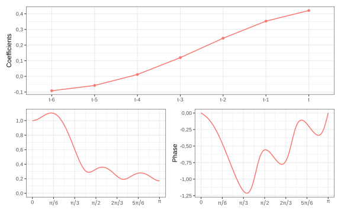
2 Estimation de la tendance-cycle et formule générale de construction des moyennes mobiles
Alain Quartier-la-Tente ![]()
Références de l’article :
Quartier-la-Tente A (2024), Estimation en temps réel de la tendance-cycle : apport de l’utilisation des moyennes mobiles asymétriques, Document de travail Insee, M2024/01. https://github.com/InseeFrLab/DT-est-tr-tc.
2.1 Introduction
L’analyse du cycle économique, et en particulier la détection rapide des points de retournement d’une série, est un sujet de première importance dans l’analyse de la conjoncture économique. Pour cela, les indicateurs économiques sont généralement corrigés des variations saisonnières. Toutefois, afin d’améliorer leur lisibilité, il peut être nécessaire d’effectuer un lissage supplémentaire afin de réduire le bruit, et ainsi analyser la composante tendance-cycle. Par construction, les méthodes d’extraction de tendance-cycle sont étroitement liées aux méthodes de désaisonnalisation. En effet, afin d’estimer la composante saisonnière, les algorithmes de désaisonnalisation estiment préalablement une composante tendance-cycle. Ainsi, même si les méthodes d’extraction de tendance-cycle sont généralement appliquées sur des séries corrigées des variations saisonnières, l’estimation de ces séries dépend également des méthodes d’estimation de la tendance-cycle.
Les moyennes mobiles, ou les filtres linéaires, sont omniprésents dans les méthodes d’extraction du cycle économique et d’ajustement saisonnier1. Ainsi, la méthode de désaisonnalisation X-13ARIMA-SEATS utilise des moyennes mobiles de Henderson et des moyennes mobiles composites pour estimer les principales composantes d’une série chronologique. Au centre de la série, des filtres symétriques sont appliqués. Pour l’extraction de la tendance-cycle, le filtre symétrique le plus connu est celui de Henderson (1916), notamment utilisé dans l’algorithme de désaisonnalisation X-13ARIMA.
En revanche, pour les estimations en temps réel, en raison de l’absence d’observations futures, toutes ces méthodes doivent s’appuyer sur des filtres asymétriques pour estimer les points les plus récents. Par exemple, même si X-13ARIMA-SEATS applique des moyennes symétriques aux prévisions obtenues à partir d’un modèle ARIMA, cela revient à appliquer des filtres asymétriques en fin de série, car les valeurs prédites sont des combinaisons linéaires de valeurs passées.
Si ces moyennes mobiles asymétriques ont de bonnes propriétés concernant la taille des révisions futures induites par le processus de lissage2, elles induisent également, par construction, des déphasages qui retardent en général la détection en temps réel des points de retournement.
L’objectif de cette étude est de décrire et de comparer les approches récentes permettant l’extraction de tendance-cycle en temps-réel. Après une description des propriétés générales d’un filtre linéaire (Section 2.2), différentes méthodes seront présentées : filtres polynomiaux locaux, filtres fondés sur les espaces de Hilbert à noyau reproduisant (RKHS, Section 2.3) et méthodes fondées sur une optimisation des propriétés des filtres — Fidelity-Smoothness-Timeliness (FST, Section 2.4) et Accuracy, Timeliness, Smoothness (ATS, Section 2.5).
Bien que ces méthodes aient été présentées avec des approches générales de construction des filtres linéaires, leurs propriétés théoriques et leurs performances empiriques n’ont pas été comparées. Cette étude décrit l’ensemble de ces méthodes en développant une formulation générale pour la construction des filtres, permettant de mettre en exergue les spécificités de chacune.
Ainsi, les méthodes polynomiales ont l’avantage d’être simples et facilement compréhensibles. Elles peuvent également prendre en compte des problèmes complexes (comme l’autocorrélation induite par l’utilisation d’un plan de sondage rotatif avec une période de recouvrement). En revanche, l’inconvénient est que le déphasage ne peut pas être contrôlé (ce qui peut introduire des délais plus importants dans la détection des points de retournement). Cette analyse montre aussi comment les filtres polynomiaux peuvent être étendus en ajoutant un critère permettant de contrôler le déphasage ou en les paramétrisant localement.
Les RKHS permettent de construire facilement des filtres adaptés à toutes les fréquences (y compris des fréquences irrégulières) mais ont notamment l’inconvénient d’être numériquement instables (des problèmes d’optimisation peuvent apparaître, comme dans la méthode FST).
La méthode FST a l’avantage d’être analytiquement soluble mais a l’inconvénient d’être plus difficilement paramétrisable car les différents critères utilisés ne sont pas normalisés : les poids associés aux différents critères n’ont donc pas de sens.
Enfin, dans une dernière partie (Section 2.6), toutes ces méthodes sont comparées empiriquement sur des séries simulées et sur des séries réelles désaisonnalisées. En raison du lien entre désaisonnalisation et extraction de la tendance-cycle, les applications pratiques se concentreront sur les méthodes non-paramétriques qui pourraient être incluses dans X-13ARIMA-SEATS (la méthode ATS, paramétrique, est donc exclue). Cette analyse permet tout d’abord de montrer comment les problèmes d’optimisation des filtres issus des RKHS peuvent conduire à des filtres sous-optimaux (augmentation des révisions et du délai dans la détection des points de retournement). Ensuite, la méthode proposée pour paramétrer localement les filtres polynomiaux permet à la fois de détecter plus rapidement les points de retournement et de réduire les révisions dans les estimations successives de la tendance-cycle. Enfin, les résultats montrent que les futures études sur les méthodes d’estimations de la tendance-cycle peuvent probablement se restreindre à celles qui modélisent des tendances locales de degré au plus 2 : modéliser des tendances plus complexes aboutit à plus de révisions sans gain en termes de détection des points de retournement.
Cette étude est reproductible. Tous les codes utilisés sont disponibles sous https://github.com/InseeFrLab/DT-est-tr-tc. Par ailleurs, toutes les méthodes décrites sont implémentées dans le package R rjd3filters3 qui accompagne cette étude. Celui-ci propose également plusieurs outils pour manipuler les moyennes mobiles et évaluer la qualité des estimations.
2.2 Quelques propriétés sur les moyennes mobiles
Cette section présente les définitions et les propriétés des moyennes mobiles utiles pour comprendre les méthodes présentées dans les prochaines sections. Pour plus de détails sur les moyennes mobiles, voir par exemple Ladiray (2018).
Soient deux entiers \(p\) et \(f\). Une moyenne mobile \(M_{\boldsymbol\theta}\) est un opérateur linéaire défini par un ensemble de coefficients \(\boldsymbol \theta=(\theta_{-p},\dots,\theta_{f})'\) qui transforme toute série temporelle \(X_t\) en : \[ M_{\boldsymbol\theta}(X_t)=\sum_{k=-p}^{+f}\theta_kX_{t+k}. \] On a les définitions suivantes :
La quantité \(p+f+1\) est appelée ordre de la moyenne mobile.
Lorsque \(p=f\) la moyenne mobile est dite centrée. Si de plus on a \(\forall k:\:\theta_{-k} = \theta_k\), la moyenne mobile \(M_{\boldsymbol\theta}\) est dite symétrique. Dans ce cas, la quantité \(p=f\) est appelée fenêtre (bandwidth).
2.2.1 Fonctions de gain et de déphasage
Pour interpréter les notions de gain et de déphasage, il est utile d’illustrer les effets des moyennes mobiles sur les séries harmoniques \(X_t=\e^{-i\omega t}\) avec \(\omega\in[0,\pi]\). La moyenne mobile \(M_{\boldsymbol\theta}\) transforme \(X_t\) en : \[ Y_t = M_{\boldsymbol\theta}X_t = \sum_{k=-p}^{+f} \theta_k \e^{-i \omega (t+k)} = \left(\sum_{k=-p}^{+f} \theta_k \e^{-i \omega k}\right)\cdot X_t. \] La fonction \(\Gamma_{\boldsymbol\theta}(\omega)=\sum_{k=-p}^{+f} \theta_k e^{-i \omega k}\) est appelée fonction de transfert ou fonction de réponse en fréquence (frequency response function)4. Elle peut être réécrite en : \[ \Gamma_{\boldsymbol\theta}(\omega) = \rho_{\boldsymbol\theta}(\omega)\e^{i\varphi_{\boldsymbol\theta}(\omega)}, \] où \(\rho_{\boldsymbol\theta}(\omega)=G_{\boldsymbol\theta}(\omega)=\lvert\Gamma_{\boldsymbol\theta}(\omega)\rvert\) est la fonction de gain ou d’amplitude et \(\varphi_{\boldsymbol\theta}(\omega)\) est le déphasage (phase shift ou time shift)5. Pour tous les filtres symétriques on a \(\varphi_{\boldsymbol\theta}(\omega)\equiv 0 \;(mod\;{\pi})\). En effet, la contribution du couple de termes d’ordre \(k>0\) s’écrit \(\theta_k\e^{i\omega k}+\theta_k\e^{-i\omega k} = 2\theta_k\cos (\omega k),\) sa partie imaginaire est donc nulle. Le terme d’ordre \(0\) étant \(\theta_0,\) la partie imaginaire de la fonction \(\Gamma_{\boldsymbol\theta}(\omega)\) est nulle pour tout \(\omega\in\R\) et donc \(\varphi_{\boldsymbol\theta}(\omega)\equiv 0 \;(mod\;{\pi}).\)
En somme, appliquer une moyenne mobile à une série harmonique (de la forme \(X_t=\e^{-i\omega t}\)) la modifie de deux façons :
en la multipliant par un coefficient égal à \(\rho_{\boldsymbol\theta}\left(\omega\right)\) (gain) ;
en la « décalant » dans le temps de \(\varphi_{\boldsymbol\theta}(\omega)/\omega\), ce qui a un impact sur la détection des points de retournement (déphasage)6.
La décomposition de Fourier permet d’analyser toute série temporelle (stationnaire ou stationnaire autour d’une tendance) comme une somme de séries harmoniques et chaque composante (tendance, cycle, saisonnalité, irrégulier) est associée à un ensemble de fréquences. En effet, en notant \(\omega = 2\pi/p\), la série harmonique de fréquence \(\omega\) représente une série qui se répète toutes les \(p\) périodes. Par exemple, pour une série mensuelle (12 observations par an), les mouvement saisonniers sont ceux qui se répètent chaque année : ils sont donc associés aux fréquences \(2\pi/12\) (périodicité annuelle), \(2\pi/12\times 2=2\pi/6,\dots,2\pi/12\times 5.\) Nous considérons que la tendance-cycle est associée aux fréquences dans l’intervalle \([0, 2\pi/12[\), c’est-à-dire aux mouvements se répétant au moins tous les 12 mois7. Les autres fréquences, \([2\pi/12, \pi],\) sont ici associées à l’irrégulier (oscillations indésirables).
La figure 2.1 montre la fonction de gain et de déphasage pour le filtre asymétrique de Musgrave (voir Section 2.3.1.2) souvent utilisé pour l’estimation en temps-réel de la tendance-cycle (c’est-à-dire lorsqu’aucun point dans le futur n’est connu). La fonction de gain est supérieure ou égale à 1 sur les fréquences associées à la tendance-cycle (\([0, 2\pi/12]\)) : cela signifie que la tendance-cycle est bien conservée et que les cycles courts de 1 à 2 ans (\([2\pi/24, 2\pi/12]\)) sont mêmes amplifiés. En revanche, les cycles de 8 à 12 mois (\([2\pi/12, 2\pi/8]\)), considérés comme indésirables car associés à l’irrégulier, sont également amplifiés : cela peut engendrer la détection de faux points de retournement. Sur les autres fréquences, la fonction de gain est inférieure à 1 mais toujours positive : cela signifie que la série lissée par cette moyenne mobile contiendra toujours du bruit, même si celui-ci est atténué. L’analyse du déphasage montre que le déphasage est d’autant plus élevé que les cycles sont courts : cela signifie que sur les séries lissées par cette moyenne mobile, les points de retournement pourraient être détectés à la mauvaise date.
2.2.2 Propriétés souhaitables d’une moyenne mobile
Pour décomposer une série temporelle en une composante saisonnière, une tendance-cycle et l’irrégulier, l’algorithme de décomposition X-11 (utilisé dans X-13ARIMA) utilise une succession de moyennes mobiles ayant toutes des contraintes spécifiques.
Dans notre cas, on suppose que notre série initiale \(y_t\) est désaisonnalisée et peut s’écrire comme la somme d’une tendance-cycle, \(TC_t\), et d’une composante irrégulière, \(I_t\) : \[ y_t=TC_t+I_t. \]
L’objectif va notamment être de construire des moyennes mobiles préservant au mieux la tendance-cycle (\(M_{\boldsymbol\theta} (TC_t)\simeq TC_t\)) et réduisant au maximum le bruit (\(M_{\boldsymbol\theta} (I_t)\simeq 0\)).
2.2.2.1 Préservation de tendances
Les tendances-cycles sont généralement modélisés par des tendances polynomiales locales (voir Section 2.3). Afin de conserver au mieux les tendances-cycles, on cherche à avoir des moyennes mobiles qui conservent les tendances polynomiales. Une moyenne mobile \(M_{\boldsymbol\theta}\) conserve une fonction du temps \(f(t)\) si \(\forall t:\:M_{\boldsymbol\theta} f(t)=f(t)\).
Nous avons les propriétés suivantes pour la moyenne mobile \(M_{\boldsymbol\theta}\) :
Pour conserver les constantes \(X_t=a\) il faut : \[ \forall t:M_{\boldsymbol\theta}(X_t)=\sum_{k=-p}^{+f}\theta_kX_{t+k}=\sum_{k=-p}^{+f}\theta_ka=a\sum_{k=-p}^{+f}\theta_k=a. \] C’est-à-dire qu’il faut que la somme des coefficients \(\sum_{k=-p}^{+f}\theta_k\) soit égale à \(1\).
Pour conserver les tendances linéaires \(X_t=at+b\) il faut : \[ \forall t:\:M_{\boldsymbol\theta}(X_t)=\sum_{k=-p}^{+f}\theta_kX_{t+k}=\sum_{k=-p}^{+f}\theta_k[a(t+k)+b]=a\sum_{k=-p}^{+f}k\theta_k+(at+b)\sum_{k=-p}^{+f}\theta_k=at+b. \] Ce qui est équivalent à : \[ \sum_{k=-p}^{+f}\theta_k=1 \quad\text{et}\quad \sum_{k=-p}^{+f}k\theta_k=0. \]
De manière générale, \(M_{\boldsymbol\theta}\) conserves les tendances de degré \(d\) si et seulement si : \[ \sum_{k=-p}^{+f}\theta_k=1 \text{ et } \forall j \in \llb 1,d\rrb:\: \sum_{k=-p}^{+f}k^j\theta_k=0. \]
Si \(M_{\boldsymbol\theta}\) est symétrique (\(p=f\) et \(\theta_{-k} = \theta_k\) pour tout \(k\)) et conserve les tendances de degré \(2d\) alors elle conserve aussi les tendances de degré \(2d+1\) car : \[ \sum_{k=-p}^{+p}k^{2d+1}\theta_k= 0\times\theta_0+ \sum_{k=1}^{+p}k^{2d+1}\theta_k +\sum_{k=1}^{+p}(-1)\times k^{2d+1}\underbrace{\theta_{-k}}_{=\theta_k}=0. \]
2.2.2.2 Réduction du bruit
Toutes les séries temporelles sont affectées par du bruit qui peut brouiller l’extraction de la tendance et du cycle. C’est pourquoi on cherche à réduire ce bruit (en réduisant sa variance) tout en conservant les évolutions pertinentes. La somme des carrés des coefficients \(\sum_{k=-p}^{+f}\theta_k^2,\) généralement inférieure ou égale à 1, est le rapport de réduction de la variance.
En effet, soit \(\{\varepsilon_t\}\) une suite de variables aléatoires indépendantes avec \(\E{\varepsilon_t}=0\), \(\V{\varepsilon_t}=\sigma^2\). On a : \[ \V{M_{\boldsymbol\theta}\varepsilon_t}=\V{\sum_{k=-p}^{+f} \theta_k \varepsilon_{t+k}} = \sum_{k=-p}^{+f} \theta_k^2 \V{\varepsilon_{t+k}}= \sigma^2\sum_{k=-p}^{+f} \theta_k^2. \]
2.2.3 Estimation en temps réel et moyennes mobiles asymétriques
2.2.3.1 Moyennes mobiles asymétriques et prévision
Pour les filtres symétriques, la fonction de déphasage est égale à zéro (modulo \(\pi\)). Il n’y a donc aucun retard dans la détection de points de retournement. Du fait du manque de données disponibles, ils ne peuvent toutefois pas être utilisés au début et à la fin de la série.
Pour l’estimation en temps réel, plusieurs approches peuvent être utilisées :
Utiliser des moyennes mobiles asymétriques pour prendre en compte le manque de données disponibles ;
Appliquer les filtres symétriques sur les séries prolongées par prévision. Cette méthode semble remonter à De Forest (1877) qui suggère également de modéliser en fin de période une tendance polynomiale de degré au plus trois8. C’est également l’approche utilisée dans la méthode de désaisonnalisation X-13ARIMA qui prolonge la série sur 1 an par un modèle ARIMA.
In fine, la seconde méthode revient à utiliser des moyennes mobiles asymétriques puisque les prévisions sont des combinaisons linéaires du passé.
Inversement, à partir d’une moyenne mobile symétrique de référence, on peut déduire les prévisions implicites d’une moyenne mobile asymétrique. Cela permet notamment de juger de la qualité des estimations en temps réel de la tendance-cycle et d’anticiper les futures révisions lorsque les prévisions sont éloignées des évolutions attendues.
Notons \(\boldsymbol v=(v_{-h},\dots, v_{h})\) la moyenne mobile symétrique de référence et \(\boldsymbol w^0,\dots \boldsymbol w^{h-1}\) une suite de moyennes mobiles asymétriques, d’ordre \(h+1\) à \(2h\) utilisée pour l’estimation des \(h\) derniers points avec, pour convention, \(w_t^q=0\) pour \(t>q\). C’est-à-dire que \(\boldsymbol w^0=(w_{-h}^0,\dots, w_{0}^0)\) est utilisée pour l’estimation en temps réel (lorsqu’on ne connaît aucun point dans le futur), \(\boldsymbol w^1=(w_{-h}^1,\dots, w_{1}^1)\) pour l’estimation de l’avant-dernier point (lorsqu’on ne connaît qu’un point dans le futur), etc. Notons également \(y_{-h},\dots,y_{0}\) la série étudiée observée et \(y_{1}^*,\dots y_h^*\) la prévision implicite induite par \(\boldsymbol w^0,\dots \boldsymbol w^{h-1}\). Cela signifie, que pour tout \(q\) on a : \[
\forall q, \quad \underbrace{\sum_{i=-h}^0 v_iy_i + \sum_{i=1}^h v_iy_i^*}_{\text{lissage par }v\text{ de la série prolongée}}
=\underbrace{\sum_{i=-h}^0 w_i^qy_i + \sum_{i=1}^h w_i^qy_i^*}_{\text{lissage par }w^q\text{ de la série prolongée}}.
\] Ce qui est équivalent à : \[
\forall q, \quad \sum_{i=1}^h (v_i- w_i^q) y_i^*
=\sum_{i=-h}^0 (w_i^q-v_i)y_i.
\] En somme, matriciellement, cela revient donc à résoudre : \[\scriptstyle
\begin{pmatrix}
v_1 & v_2 & \cdots & v_h \\
v_1 - w_1^1 & v_2 & \cdots & v_h \\
\vdots & \vdots & \cdots & \vdots \\
v_1 - w_1^{h-1} & v_2-w_2^{h-1} & \cdots & v_h
\end{pmatrix}
\begin{pmatrix}y_1^* \\ \vdots \\ y_h^*\end{pmatrix}=
\begin{pmatrix}
w_{-h}^0 - v_{-h} & w_{-(h-1)}^0 - v_{-(h-1)} & \cdots & w_{0}^0 - v_{0} \\
w_{-h}^1 - v_{-h} & w_{-(h-1)}^1 - v_{-(h-1)} & \cdots & w_{0}^1 - v_{0} \\
\vdots & \vdots & \cdots & \vdots \\
w_{-h}^{h-1} - v_{-h} & w_{-(h-1)}^{h-1} - v_{-(h-1)} & \cdots & w_{0}^{h-1} - v_{0}
\end{pmatrix}
\begin{pmatrix}y_{-h} \\ \vdots \\ y_0\end{pmatrix}.\] C’est ce qui implémenté dans la fonction rjd3filters::implicit_forecast().
Comme notamment souligné par Wildi et Schips (2004), étendre la série par prévision d’un modèle ARIMA revient à calculer des filtres asymétriques dont les coefficients sont optimisés par rapport à la prévision à horizon d’une période — one-step ahead forecasting. Autrement dit, on cherche à minimiser les révisions entre la première et la dernière estimation (avec le filtre symétrique). Cependant, le déphasage induit par les filtres asymétriques n’est pas contrôlé : on pourrait préférer avoir une détection plus rapide des points de retournement et une révision plus grande plutôt que de juste minimiser les révisions entre la première et la dernière estimation. Par ailleurs, puisque les coefficients du filtre symétrique (et donc le poids associé aux prévisions lointaines) décroissent lentement, il faudrait également s’intéresser à la performance des prévisions à horizon de plusieurs périodes — multi-step ahead forecasting. C’est pourquoi il peut être nécessaire de définir des critères alternatifs pour juger la qualité des moyennes mobiles asymétriques.
2.2.3.2 Indicateurs de qualité des moyennes mobiles asymétriques
Pour les filtres asymétriques, la majorité des critères proviennent de ceux définis par Grun-Rehomme, Guggemos, et Ladiray (2018) et Wildi et McElroy (2019) pour construire les filtres asymétriques. Ils sont résumés dans le table 2.1 et calculables avec la fonction rjd3filters::diagnostic_matrix().
Grun-Rehomme, Guggemos, et Ladiray (2018) proposent une approche générale pour dériver des filtres linéaires, fondée sur un problème d’optimisation de trois critères : Fidelity (\(F_g\), Fidélité), Smoothness (\(S_g\), lissage) et Timeliness (\(T_g\), rapidité). La fidélité peut être directement reliée à la réduction de variance créée par le filtre et la rapidité à la notion de déphasage, qu’on souhaite là encore faible.
Wildi et McElroy (2019) proposent une approche qui s’appuie sur la décomposition de l’erreur quadratique moyenne entre le filtre symétrique et le filtre asymétrique en quatre quantités : Accuracy (\(A_w\), précision), Timeliness (\(T_w\), rapidité), Smoothness (\(S_w\), lissage) et Residual (\(R_w\), résidus). Voir Section 2.5 pour plus de détails.
| Sigle | Description | Formule |
|---|---|---|
| \(b_c\) | Biais constant | \(\sum_{k=-p}^{+f}\theta_{k}-1\) |
| \(b_l\) | Biais linéaire | \(\sum_{k=-p}^{+f}k\theta_{k}\) |
| \(b_q\) | Biais quadratique | \(\sum_{k=-p}^{+f}k^{2}\theta_{k}\) |
| \(F_g\) | Réduction de la variance / Fidelity (Guggemos) | \(\sum_{k=-p}^{+f}\theta_{k}^{2}\) |
| \(S_g\) | Smoothness (Guggemos) | \(\sum_{j}(\nabla^{3}\theta_{j})^{2}\) |
| \(T_g\) | Timeliness (Guggemos) | \(\int_{0}^{\omega_1}\rho_{\boldsymbol\theta}(\omega)\sin(\varphi_{\boldsymbol\theta}(\omega))^{2}\,\mathrm{d}\omega\) |
| \(A_w\) | Accuracy (Wildi) | \(2\int_0^{\omega_1}\left(\rho_{s}(\omega)-\rho_{\boldsymbol\theta}(\omega)\right)^{2}h(\omega)\,\mathrm{d}\omega\) |
| \(T_w\) | Timeliness (Wildi) | \(8\int_0^{\omega_1} \rho_{s}(\omega)\rho_{\boldsymbol\theta}(\omega)\sin^{2}\left(\frac{\varphi_s(\omega)-\varphi_{\boldsymbol\theta}(\omega)}{2}\right)h(\omega)\,\mathrm{d}\omega\) |
| \(S_w\) | Smoothness (Wildi) | \(2\int_{\omega_1}^{\pi}\left(\rho_{s}(\omega)-\rho_{\boldsymbol\theta}(\omega)\right)^{2}h(\omega)\,\mathrm{d}\omega\) |
| \(R_w\) | Residual (Wildi) | \(8\int_{\omega_1}^{\pi} \rho_{s}(\omega)\rho_{\boldsymbol\theta}(\omega)\sin^{2}\left(\frac{\varphi_s(\omega)-\varphi_{\boldsymbol\theta}(\omega)}{2}\right)h(\omega)\,\mathrm{d}\omega\) |
Notes : \(X_g\) critères provenant de Grun-Rehomme, Guggemos, et Ladiray (2018) et \(X_w\) critères provenant de Wildi et McElroy (2019).
\(\rho_s\) et \(\varphi_s\) représentent le gain et la fonction de déphasage du filtre symétrique d’Henderson.
\(h\) est la densité spectrale de la série en entrée, considérée comme étant celle d’un bruit blanc (\(h_{WN}(x)=1\)) ou d’une marche aléatoire (\(h_{RW}(x)=\frac{1}{2(1-\cos(x))}\)).
2.2.3.3 Formule générale de construction des moyennes mobiles
Toutes les moyennes mobiles et tous les critères de qualité étudiés peuvent se voir comme des cas particuliers d’une formule générale de construction des filtres (symétriques et asymétriques). Celle-ci est décrite dans l’annexe 2.8.1, qui montre également les liens entre les différentes méthodes. Tous les filtres utilisés dans les simulations sont résumés dans l’annexe 2.8.2.
2.2.3.4 Illustration
Les différentes méthodes de construction de moyennes mobiles asymétriques seront illustrées à partir de l’exemple du lissage du climat des affaires dans le secteur des matériels de transport (C4), publié par l’Insee9, jusqu’en mai 2023.
L’indicateur synthétique du climat des affaires résume l’opinion des chefs d’entreprise sur la conjoncture du secteur associé (ici les matériels de transport) : plus sa valeur est élevée, plus les industriels considèrent que la conjoncture est favorable. Il est calculé à partir de soldes d’opinion issus des enquêtes de conjoncture de l’Insee. Toutefois, du fait de la volatilité des soldes d’opinion utilisés, les climats des affaires peuvent être bruités, ce qui peut rendre difficile l’identification des périodes de retournement conjoncturel (voir figure 2.2), c’est-à-dire les périodes où les industriels considèrent que la conjoncture passe d’un état favorable à un état moins favorable, ou l’inverse. Les méthodes présentées dans cette étude permettent de lisser les séries afin d’extraire la composante tendance-cycle pour faciliter l’analyse des retournements conjoncturels dans le cycle classique (également appelé cycle des affaires). On ne cherche donc pas à estimer séparément la tendance (qui représente les évolutions de long terme) et le cycle (qui représente les évolutions cycliques autour de la tendance) puisque ces composantes peuvent être difficiles à séparer (quelle définition prendre pour distinguer les cycles courts et des cycles longs ?). Par ailleurs, la décomposition entre tendance et cycle, associée à des méthodes de filtrage de type Hodrick-Prescott ou Baxter-King, sont plutôt utilisées pour analyser les points de retournement dans le cycle de croissance (voir Ferrara (2009) pour une description des différents cycles économiques). Ces méthodes de décomposition tendance et cycle nécessitent d’avoir des séries longues (afin de distinguer cycles courts et tendance de long terme) alors que les méthodes utilisées dans cet article utilisent peu d’observations (en général 13 pour des séries mensuelles).
La figure 2.2 montre la série initiale et la série lissée avec le filtre symétrique d’Henderson (présenté dans la Section 2.3), qui sera utilisé pour les estimations finales de la tendance-cycle (c’est-à-dire lorsque suffisamment d’observations sont disponibles afin de permettre son utilisation). La série lissée permet, par construction, de localiser plus facilement les points de retournement et d’interpréter les évolutions mensuelles de l’indicateur. L’objectif de cette étude est de comparer différentes méthodes pour estimer les estimations intermédiaires des derniers points de la série lissée, avant que les points futurs ne soient disponibles. L’annexe 2.8.3 contient le code utilisé pour cet exemple illustratif.
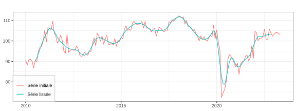
2.3 Régression non paramétrique et régression polynomiale locale
De nombreuses méthodes d’extraction de la tendance-cycle sont fondées sur des régressions non-paramétriques, particulièrement souples car elles ne supposent pas de dépendance prédéterminée dans les prédicteurs. En pratique, on peut s’appuyer sur des régressions locales. Plus précisément, si on considère un ensemble de points \((x_i,y_i)_{1\leq i\leq n},\) la régression non paramétrique consiste à supposer qu’il existe une fonction \(\mu\), à estimer, telle que \(y_i=\mu(x_i)+\varepsilon_i\) avec \(\varepsilon_i\) un terme d’erreur. D’après le théorème de Taylor, pour tout point \(x_0\), si \(\mu\) est différentiable \(d\) fois, alors : \[ \forall x \::\:\mu(x) = \mu(x_0) + \mu'(x_0)(x-x_0)+\dots + \frac{\mu^{(d)}(x_0)}{d!}(x-x_0)^d+R_d(x), \tag{2.1}\] où \(R_d\) est un terme résiduel négligeable au voisinage de \(x_0\). Dans un voisinage \(h(x_0)\) autour de \(x_0\), \(\mu\) peut être approchée par un polynôme de degré \(d\). La quantité \(h(x_0)\) est appelée fenêtre (bandwidth). Si \(\varepsilon_i\) est un bruit blanc, on peut donc estimer par les moindres carrés \(\mu(x_0)\) en utilisant les observations qui sont dans \(\left[x_0-h(x_0),x_0+h(x_0)\right]\).
En pratique, cela revient donc à faire l’hypothèse que la tendance est localement polynomiale. Différentes méthodes d’estimation peuvent être utilisées pour en déduire des moyennes mobiles symétriques et asymétriques.
Gray et Thomson (1996) (Section 2.3.4) proposent un cadre statistique complet permettant notamment de modéliser l’erreur d’approximation de la tendance par des polynômes locaux. Toutefois, la spécification de cette erreur étant en général complexe, des modélisations plus simples peuvent être préférées, comme celle de Proietti et Luati (2008) (Section 2.3.1).
Enfin, Dagum et Bianconcini (2008) (Section 2.3.5) proposent une modélisation similaire de la tendance-cycle mais utilisant la théorie des espaces de Hilbert à noyau reproduisant pour l’estimation, ce qui a notamment l’avantage de faciliter le calcul des différentes moyennes mobiles à différentes fréquences temporelles.
Les équivalences entre ces différentes méthodes sont présentées dans l’annexe 2.8.1.
2.3.1 Régression polynomiale : approche de Proietti et Luati
2.3.1.1 Filtres symétriques
En reprenant les notations de Proietti et Luati (2008), nous supposons que notre série temporelle \(y_t\) peut être décomposée en \[ y_t=\mu_t+\varepsilon_t, \] où \(\mu_t\) est la tendance et \(\varepsilon_{t}\overset{i.i.d}{\sim}\mathcal{N}(0,\sigma^{2})\) est le bruit10. La tendance \(\mu_t\) est localement approchée par un polynôme de degré \(d\), de sorte que dans un voisinage \(h\) de \(t\) \(\mu_t\simeq m_{t}\) avec : \[ \forall j\in\llb -h,h\rrb :\: y_{t+j}=m_{t+j}+\varepsilon_{t+j},\quad m_{t+j}=\sum_{i=0}^{d}\beta_{i}j^{i}. \] Le problème d’extraction de la tendance est équivalent à l’estimation de \(m_t=\beta_0\) (la constante dans la formule précédente).
En notation matricielle : \[ \underbrace{\begin{pmatrix}y_{t-h}\\ y_{t-(h-1)}\\ \vdots\\ y_{t}\\ \vdots\\ y_{t+(h-1)}\\ y_{t+h} \end{pmatrix}}_{\boldsymbol y}=\underbrace{\begin{pmatrix}1 & -h & h^{2} & \cdots & (-h)^{d}\\ 1 & -(h-1) & (h-1)^{2} & \cdots & (-(h-1))^{d}\\ \vdots & \vdots & \vdots & \cdots & \vdots\\ 1 & 0 & 0 & \cdots & 0\\ \vdots & \vdots & \vdots & \cdots & \vdots\\ 1 & h-1 & (h-1)^{2} & \cdots & (h-1)^{d}\\ 1 & h & h^{2} & \cdots & h^{d} \end{pmatrix}}_{\boldsymbol X}\underbrace{\begin{pmatrix}\beta_{0}\\ \beta_{1}\\ \vdots\\ \vdots\\ \vdots\\ \vdots\\ \beta_{d} \end{pmatrix}}_{\boldsymbol \beta}+\underbrace{\begin{pmatrix}\varepsilon_{t-h}\\ \varepsilon_{t-(h-1)}\\ \vdots\\ \varepsilon_{t}\\ \vdots\\ \varepsilon_{t+(h-1)}\\ \varepsilon_{t+h} \end{pmatrix}}_{\boldsymbol \varepsilon}. \]
Pour estimer \(\beta\) il faut \(2h+1\geq d+1\) et l’estimation est faite par moindres carrés pondérés — weighted least squares (WLS) —, ce qui revient à minimiser la fonction objectif suivante : \[ S(\hat{\beta}_{0},\dots,\hat{\beta}_{d})=\sum_{j=-h}^{h}\kappa_{j}(y_{t+j}-\hat{\beta}_{0}-\hat{\beta}_{1}j-\dots-\hat{\beta}_{d}j^{d})^{2}. \] où \(\kappa_j\) est un ensemble de poids appelés noyaux (kernel). On a \(\kappa_j\geq 0:\kappa_{-j}=\kappa_j\), et en notant \(\boldsymbol K=diag(\kappa_{-h},\dots,\kappa_{h})\), l’estimateur \(\boldsymbol \beta\) peut s’écrire \(\hat{\boldsymbol \beta}=(\boldsymbol X'\boldsymbol K\boldsymbol X)^{-1}\boldsymbol X'\boldsymbol K\boldsymbol y\). Avec \(\boldsymbol e_{1}=\begin{pmatrix}1&0&\cdots&0\end{pmatrix}'\), l’estimateur de la tendance peut donc s’écrire : \[ \hat{m}_{t}=\boldsymbol e_{1}'\hat{\boldsymbol \beta}=\boldsymbol \theta'\boldsymbol y=\sum_{j=-h}^{h}\theta_{j}y_{t-j}\text{ avec }\boldsymbol \theta=\boldsymbol K\boldsymbol X(\boldsymbol X'\boldsymbol K\boldsymbol X)^{-1}\boldsymbol e_{1}. \tag{2.2}\] En somme, l’estimation de la tendance \(\hat{m}_{t}\) est obtenue en appliquant une moyenne mobile symétrique \(\boldsymbol \theta\) à \(y_t\)11. De plus, \(\boldsymbol X'\boldsymbol \theta=\boldsymbol e_{1}\) donc : \[ \sum_{j=-h}^{h}\theta_{j}=1,\quad\forall r\in\llb 1,d\rrb :\sum_{j=-h}^{h}j^{r}\theta_{j}=0. \] Ainsi, la moyenne mobile \(\boldsymbol \theta\) préserve les polynômes de degré \(d\).
L’annexe 2.8.4 présente différentes formes de noyaux ainsi que des estimateurs classiques associés.
Concernant le choix des paramètres, l’idée générale qui prévaut est que le choix entre ces différents noyaux est secondaire12 et qu’il vaut mieux se concentrer sur deux autres paramètres :
le degré du polynôme \(d\) : s’il est trop petit on risque d’avoir des estimations biaisées de la tendance-cycle et s’il est trop grand on risque d’avoir une trop grande variance dans les estimations (du fait d’un sur-ajustement) ;
le nombre de voisins \(2h+1\) (ou la fenêtre \(h\)) : s’il est trop petit alors trop peu de données seront utilisées pour les estimations (ce qui conduira à une grande variance dans les estimations) et s’il est trop grand alors l’approximation polynomiale sera vraisemblablement fausse ce qui conduira à avoir des estimations biaisées.
2.3.1.2 Filtres asymétriques
Comme mentionné dans la Section 2.2.3.1, pour l’estimation en temps réel, plusieurs approches peuvent être utilisées :
Appliquer les filtres symétriques sur les séries prolongées par prévision \(\hat{y}_{n+l\mid n},l\in\llb 1,h\rrb\).
Construire un filtre asymétrique par approximation polynomiale locale sur les observations disponibles (\(y_{t}\) pour \(t\in\llb n-h,n\rrb\)).
Construire des filtres asymétriques qui minimisent l’erreur quadratique moyenne de révision sous des contraintes de reproduction de tendances polynomiales.
Proietti et Luati (2008) montrent que les deux premières approches sont équivalentes lorsque les prévisions sont faites par extrapolation polynomiale de degré \(d\). Elles sont également équivalentes à la troisième approche sous les mêmes contraintes que celles du filtre symétrique. La troisième méthode est appelée direct asymmetric filter (DAF). C’est cette méthode qui est utilisée pour l’estimation en temps réel dans la méthode de désaisonnalisation STL (Seasonal-Trend decomposition based on Loess, voir R. B. Cleveland et al. (1990)). Même si les estimations des filtres DAF sont sans biais, c’est au coût d’une plus grande variance dans les estimations.
Pour résoudre le problème de la variance des estimations des filtres en temps réel, Proietti et Luati (2008) proposent une méthode générale pour construire les filtres asymétriques qui permet de faire un compromis biais-variance. Il s’agit d’une généralisation des filtres asymétriques de Musgrave (1964) (utilisés dans l’algorithme de désaisonnalisation X-13ARIMA).
On modélise ici la série initiale par : \[ \boldsymbol y=\boldsymbol U\boldsymbol \gamma+\boldsymbol Z\boldsymbol \delta+\boldsymbol \varepsilon,\quad \boldsymbol \varepsilon\sim\mathcal{N}(\boldsymbol 0,\boldsymbol D). \tag{2.3}\] où \([\boldsymbol U,\boldsymbol Z]\) est de rang plein et forme un sous-ensemble des colonnes de \(\boldsymbol X\). L’objectif est de trouver un filtre \(\boldsymbol v\) qui minimise l’erreur quadratique moyenne de révision (au filtre symétrique \(\boldsymbol \theta\)) sous certaines contraintes. Ces contraintes sont représentées par la matrice \(\boldsymbol U=\begin{pmatrix}\boldsymbol U_{p}'&\boldsymbol U_{f}'\end{pmatrix}'\) : \(\boldsymbol U_p'\boldsymbol v=\boldsymbol U'\boldsymbol \theta\) (avec \(\boldsymbol U_p\) la matrice \((h+q+1)\times (d+1)\) qui contient les observations de la matrice \(\boldsymbol U\) connues lors de l’estimation par le filtre asymétrique). Le problème est équivalent à trouver \(\boldsymbol v\) qui minimise : \[ \varphi(\boldsymbol v)= \underbrace{ \underbrace{(\boldsymbol v-\boldsymbol \theta_{p})'\boldsymbol D_{p}(\boldsymbol v-\boldsymbol \theta_{p})+ \boldsymbol \theta_{f}'\boldsymbol D_{f}\boldsymbol \theta_{f}}_\text{variance de l'erreur de révision}+ \underbrace{[\boldsymbol \delta'(\boldsymbol Z_{p}'\boldsymbol v-\boldsymbol Z'\boldsymbol \theta)]^{2}}_{biais^2} }_\text{Erreur quadratique moyenne de révision}+ \underbrace{2\boldsymbol l'(\boldsymbol U_{p}'\boldsymbol v-\boldsymbol U'\boldsymbol \theta)}_{\text{contraintes}}. \tag{2.4}\] où \(\boldsymbol l\) est le vecteur des multiplicateurs de Lagrange.
Lorsque \(\boldsymbol U=\boldsymbol X\), la contrainte équivaut à préserver les polynômes de degré \(d\) : on retrouve les filtres directs asymétriques (DAF) lorsque \(\boldsymbol D=\boldsymbol K^{-1}\).
Lorsque \(\boldsymbol U=\begin{pmatrix}1&\cdots&1\end{pmatrix}'\), \(\boldsymbol Z=\begin{pmatrix}-h&\cdots&+h\end{pmatrix}'\), \(\boldsymbol \delta=\delta_1\), \(\boldsymbol D=\sigma^2\boldsymbol I\) et lorsque le filtre symétrique est le filtre d’Henderson, on retrouve les filtres asymétriques de Musgrave. Ce filtre suppose que, pour l’estimation en temps réel, les données sont générées par un processus linéaire et que les filtres asymétriques préservent les constantes (\(\sum v_i=\sum \theta_i=1\)). Ces filtres asymétriques dépendent du rapport \(\lvert\delta_1/\sigma\rvert\), qui est lié à l’I-C ratio \(R=\frac{\bar{I}}{\bar{C}}=\frac{\sum\lvert I_t-I_{t-1}\rvert}{\sum\lvert C_t-C_{t-1}\rvert}\) (et l’on a \(\delta_1/\sigma=2/(R\sqrt{\pi})\)), qui est notamment utilisé dans X-13ARIMA pour déterminer la longueur du filtre d’Henderson13.
Lorsque \(\boldsymbol U\) correspond aux \(d^*+1\) premières colonnes de \(\boldsymbol X\), \(d^*<d\), la contrainte consiste à reproduire des tendances polynomiales de degré \(d^*\). Cela introduit du biais mais réduit la variance. Ainsi, Proietti et Luati (2008) proposent trois classes de filtres asymétriques :
Linear-Constant (LC) : \(y_t\) linéaire (\(d=1\)) et \(v\) préserve les constantes (\(d^*=0\)). On obtient le filtre de Musgrave avec le filtre d’Henderson comme filtre symétrique.
Quadratic-Linear (QL) : \(y_t\) quadratique (\(d=2\)) et \(v\) préserve les tendances linéaires (\(d^*=1\)).
Cubic-Quadratic (CQ) : \(y_t\) cubic (\(d=3\)) et \(v\) préserve les tendances quadratiques (\(d^*=2\)).
La table 2.2 compare les critères de qualité des différentes méthodes en utilisant le filtre d’Henderson et \(h=6\) (filtre symétrique de 13 termes). Pour les filtres en temps réel (\(q=0\)), plus le filtre asymétrique est complexe (en termes de préservation polynomiale), moins la timeliness est élevée et plus la fidelity/smoothness est grande : la réduction du déphasage se fait au détriment d’une augmentation de la variance. Ce résultat varie lorsque \(q\) augmente : pour \(q=2\) le filtre QL a une plus grande timeliness que le filtre LC. Ce résultat étonnant souligne le fait que le déphasage n’est pas contrôlé par l’approche de Proietti et Luati (2008).
En termes de révision, (\(A_w+S_w+T_w+R_w\)), les filtres LC et QL donnent toujours de meilleurs résultats que les filtres CQ et DAF.
Ces propriétés « théoriques » sont conformes aux résultats empiriques observés dans la Section 2.6 : les révisions sont plus importantes pour les filtres CQ et DAF (ce qui conduit à plus de variabilité dans les estimations et à un délai plus grand dans la détection des points de retournement) ; et le filtre QL paramétrisé de manière globale (paramètre \(R\) fixé pour tous les filtres asymétriques) peut conduire à une détection plus tardive des points de retournement que le filtre LC14.
| Method | \(b_c\) | \(b_l\) | \(b_q\) | \(F_g\) | \(S_g\) | \(T_g \times 10^{-3}\) | \(A_w\) | \(S_w\) | \(T_w\) | \(R_w\) | \(EQM_w\) |
|---|---|---|---|---|---|---|---|---|---|---|---|
| \(q=0\) | |||||||||||
| LC | -0,00 | −0,41 | −2,16 | 0,39 | 1,27 | 30,34 | 0,10 | 0,49 | 0,41 | 0,55 | 1,54 |
| QL | -0,00 | −0,00 | −0,47 | 0,71 | 5,15 | 0,05 | 0,07 | 1,89 | 0,00 | 0,11 | 2,07 |
| CQ | 0,00 | −0,00 | 0,00 | 0,91 | 11,94 | 0,01 | 0,02 | 2,23 | 0,00 | 0,10 | 2,35 |
| DAF | -0,00 | 0,00 | −0,00 | 0,94 | 14,20 | 0,00 | 0,01 | 2,18 | 0,00 | 0,10 | 2,29 |
| \(q=1\) | |||||||||||
| LC | -0,00 | −0,12 | −0,52 | 0,27 | 0,43 | 4,80 | 0,01 | 0,12 | 0,06 | 0,11 | 0,30 |
| QL | 0,00 | 0,00 | −0,06 | 0,29 | 0,71 | 0,69 | 0,00 | 0,19 | 0,01 | 0,04 | 0,25 |
| CQ | -0,00 | 0,00 | −0,00 | 0,37 | 0,57 | 0,16 | 0,02 | 0,58 | 0,00 | 0,06 | 0,66 |
| DAF | -0,00 | 0,00 | −0,00 | 0,41 | 0,37 | 0,06 | 0,02 | 0,76 | 0,00 | 0,06 | 0,84 |
| \(q=2\) | |||||||||||
| LC | 0,00 | 0,00 | 1,08 | 0,20 | 0,08 | 0,35 | 0,01 | 0,01 | 0,00 | 0,01 | 0,04 |
| QL | 0,00 | 0,00 | 0,03 | 0,22 | 0,05 | 2,08 | 0,00 | 0,01 | 0,02 | 0,07 | 0,10 |
| CQ | 0,00 | −0,00 | −0,00 | 0,37 | 0,66 | 0,13 | 0,02 | 0,56 | 0,00 | 0,06 | 0,64 |
| DAF | 0,00 | 0,00 | 0,00 | 0,40 | 0,77 | 0,02 | 0,02 | 0,68 | 0,00 | 0,05 | 0,74 |
Note : Avec \(EQM_w=A_w + S_w + T_w + R_w\).
Note de lecture : dès qu’au moins deux points dans le futur sont connus (\(q=2\)), le filtre LC conserve sans biais les tendance linéaires (\(b_l = 0\)). Pour ce filtre, dès lors que l’on utilise au moins deux points dans le futur (\(q=2\)), l’erreur d’estimation provenant de l’utilisation d’un filtre asymétrique plutôt que symétrique (estimation finale) est quasiment nulle (\(EQM_w\simeq 0\)). Dès qu’au moins un point dans le futur est connu (\(q=1\)), le filtre QL conserve quasiment sans biais les tendances quadratiques (\(b_q\simeq 0\)). Pour ce filtre, la timeliness est plus élevée lorsque deux points dans le futur sont connus (\(q=2\)) que pour l’estimation en temps réel (\(q=0\) ; \(T_g\) et \(T_w\) augmentent).
Une application en ligne, disponible à l’adresse https://aqlt.shinyapps.io/FiltersProperties/, permet de comparer les coefficients, les fonctions de gain et de déphasage entre les différentes méthodes et les différents noyaux.
La figure 2.3 montre les estimations successives de la série lissée du climat des affaires avec les filtres polynomiaux (paramétré à partir de l’IC-ratio). C’est-à-dire qu’il trace la tendance-cycle estimée en utilisant les données observées jusqu’en novembre 2022, celle estimée en utilisant les données observées jusqu’en décembre 2022, etc. La figure 2.415 montre les prévisions implicites associées à ces différentes estimations successives : il s’agit des prévisions de la série brute qui, en appliquant le filtre symétrique sur la série prolongée, permettent d’obtenir la même tendance-cycle qu’en utilisant les moyennes mobiles asymétriques (voir Section 2.2.3.1).
Sur cette série et sur ces points, c’est le filtre LC qui donne les meilleurs résultats avec des prévisions implicites naïves (prolongement par une droite) mais plus cohérentes que celles des autres filtres. Les filtres CQ et DAF conduisent à des estimations en temps-réel très éloignées des dernières estimations.
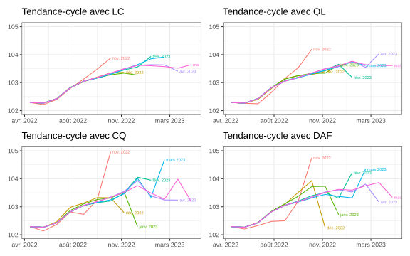
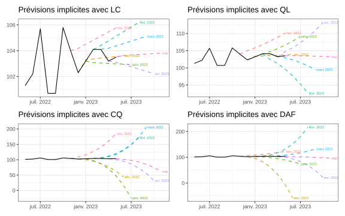
Note : L’axe des ordonnées n’est pas le même entre les différents graphiques.
2.3.2 Paramétrisation locale des filtres asymétriques
Usuellement, les filtres asymétriques sont paramétrés de façon globale : \(\lvert\delta/\sigma\rvert\) estimé sur l’ensemble des données à partir de l’IC-ratio ou d’un critère de validation croisée. En revanche, on pourrait préférer une paramétrisation locale : rapport \(\lvert\delta/\sigma\rvert\) qui varie en fonction du temps. En effet, même si la paramétrisation globale est en moyenne valide, supposer le rapport \(\lvert\delta/\sigma\rvert\) constant pour l’ensemble des filtres asymétriques ne parait pas pertinent pour l’estimation en temps réel, en particulier pour des périodes de retournement conjoncturel. Par exemple, avec la méthode LC, effectuer une paramétrisation globale revient à supposer que la pente de la tendance est constante, alors que pendant les périodes de retournement conjoncturel, elle tend vers 0 jusqu’au point de retournement.
C’est ce qui est proposé dans cet article, avec une paramétrisation locale des filtres asymétriques en estimant séparément \(\delta\) et \(\sigma^2\). Même si cela ne donne pas un estimateur sans biais du rapport \(\lvert\delta/\sigma\rvert\), cela permet de capter les principales évolutions comme la décroissance vers 0 avant un point de retournement et la croissance après le point de retournement pour la méthode LC :
- La variance \(\sigma^2\) peut être estimée en utilisant l’ensemble des données observées et à partir du filtre symétrique \((w_{-p},\dots,w_p)\) : \[ \hat\sigma^2=\frac{1}{n-2h}\sum_{t=h+1}^{n-h}\frac{(y_t-\hat \mu_t)^2}{1-2w_0^2+\sum w_i^2}. \]
- Le paramètre \(\delta\) peut être estimé par moyenne mobile à partir de l’équation 2.2. Par exemple, pour la méthode LC on peut utiliser la moyenne mobile \(\boldsymbol \theta_2=\boldsymbol K\boldsymbol X(\boldsymbol X'\boldsymbol K\boldsymbol X)^{-1}\boldsymbol e_{2}\) pour avoir une estimation locale de la pente et pour la méthode QL on peut utiliser \(\boldsymbol \theta_3=\boldsymbol K\boldsymbol X(\boldsymbol X'\boldsymbol K\boldsymbol X)^{-1}\boldsymbol e_{3}\) pour avoir une estimation locale de la concavité. La méthode DAF permet alors de simplement calculer les moyennes mobiles asymétriques associées.
Même si une moyenne mobile de longueur différente de celle utilisée pour l’estimation de la tendance pourrait être envisagée, cela semble dégrader les résultats en termes de déphasage (en utilisant la même méthodologie que dans la Section 2.6). De plus, pour la construction des moyennes mobiles, la tendance peut être modélisée comme étant localement de degré 2 ou 3 (cela n’a pas d’impact pour l’estimation finale de la concavité). Nous retenons ici une modélisation de tendance de degré 2 : cela diminue le déphasage mais augmente légèrement les révisions liées à la première estimation de la tendance-cycle. La figure 2.5 montre les moyennes mobiles utilisées.
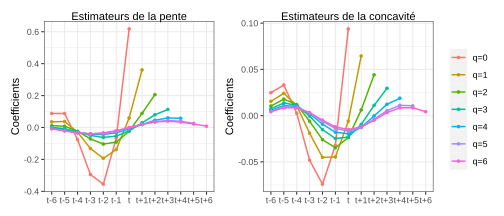
Dans les applications empiriques de la Section 2.6, la paramétrisation locale finale correspond à celle où \(\delta\) est estimé en utilisant l’ensemble des données (c’est-à-dire en utilisant les filtres symétriques de la figure 2.5) mais en gardant une estimation en temps réel de \(\sigma^2\).
Les figure 2.6, figure 2.7 montrent les estimations successives de la série lissée du climat des affaires dans les matériels de transport avec une paramétrisation locale et avec une paramétrisation avec l’IC-ratio. Sur cette série et sur les points étudiés, la paramétrisation locale ne semble pas avoir d’impact sur le filtre LC à l’exception de la dernière estimation (pour laquelle les prévisions implicites des filtres avec paramétrisation locale semblent plus plausibles). Pour le filtre QL cela permet d’avoir moins de révisions dans les estimations intermédiaires (avec également des prévisions implicites plus plausibles avec la paramétrisation locale).
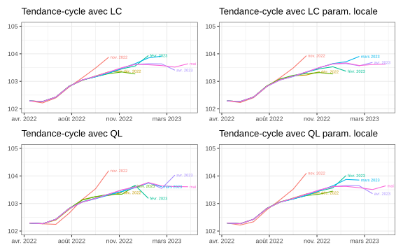
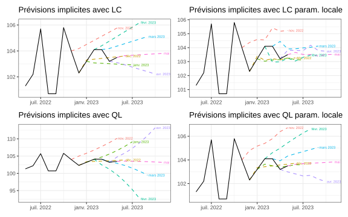
Note : L’axe des ordonnées n’est pas le même entre les différents graphiques.
2.3.3 Extension avec le critère de timeliness
Un inconvénient de la méthode précédente est que le déphasage n’est pas contrôlé. Il est en revanche possible de généraliser davantage la modélisation en ajoutant le critère de timeliness défini par Grun-Rehomme, Guggemos, et Ladiray (2018) dans l’équation 2.416.
En utilisant les mêmes notations que dans la Section 2.3.1.2, \(\boldsymbol \theta\) le filtre symétrique et \(\boldsymbol v\) le filtre asymétrique. Notons également \(\boldsymbol \theta=\begin{pmatrix}\boldsymbol \theta_p\\\boldsymbol \theta_f\end{pmatrix}\) avec \(\boldsymbol \theta_p\) de même longueur que \(\boldsymbol v\), et \(\boldsymbol g=\boldsymbol v-\boldsymbol \theta_p\). Le critère de timeliness s’écrit : \[ T_g(\boldsymbol v)=\boldsymbol v'\boldsymbol T\boldsymbol v=\boldsymbol g'\boldsymbol T\boldsymbol g+2\boldsymbol \theta_p'\boldsymbol T\boldsymbol g+\boldsymbol \theta_p'\boldsymbol T\boldsymbol \theta_p \quad(\boldsymbol T\text{ étant symétrique)}. \] De plus, la fonction objectif \(\varphi\) de l’équation 2.4 peut se réécrire : \[\begin{align*} \varphi(\boldsymbol v)&=(\boldsymbol v-\boldsymbol \theta_p)'\boldsymbol D_{p}(\boldsymbol v-\boldsymbol \theta_p)+ \boldsymbol \theta_f'\boldsymbol D_{f}\boldsymbol \theta_f+ [\boldsymbol \delta'(\boldsymbol Z_{p}'\boldsymbol v-\boldsymbol Z'\boldsymbol \theta)]^{2}+ 2\boldsymbol l'(\boldsymbol U_{p}'\boldsymbol v-\boldsymbol U'\boldsymbol \theta)\\ &=\boldsymbol g'\boldsymbol Q\boldsymbol g-2\boldsymbol P\boldsymbol g+2\boldsymbol l'(\boldsymbol U_{p}'\boldsymbol v-\boldsymbol U'\boldsymbol \theta)+\boldsymbol c\quad\text{avec } \begin{cases} \boldsymbol Q=\boldsymbol D_p+\boldsymbol Z_p\boldsymbol \delta\boldsymbol \delta'\boldsymbol Z'_p \\ \boldsymbol P=\boldsymbol \theta_f\boldsymbol Z_f\boldsymbol \delta\boldsymbol \delta'\boldsymbol Z_p'\\ \boldsymbol c\text{ une constante indépendante de }\boldsymbol v \end{cases}. \end{align*}\]
En ajoutant le critère de timeliness, on obtient : \[ \widetilde\varphi(\boldsymbol v)=\boldsymbol g'\widetilde {\boldsymbol Q}\boldsymbol g- 2\widetilde{\boldsymbol P}\boldsymbol g+2\boldsymbol l'(\boldsymbol U_{p}'\boldsymbol v-\boldsymbol U'\boldsymbol \theta)+ \widetilde{\boldsymbol c}\quad\text{avec } \begin{cases} \widetilde{\boldsymbol Q}=\boldsymbol D_p+\boldsymbol Z_p\boldsymbol \delta\boldsymbol \delta'\boldsymbol Z'_p +\alpha_T\boldsymbol T\\ \widetilde{\boldsymbol P}=\boldsymbol \theta_f\boldsymbol Z_f\boldsymbol \delta\delta'\boldsymbol Z_p'-\alpha_T\boldsymbol \theta_p\boldsymbol T\\ \widetilde{\boldsymbol c}\text{ une constante indépendante de }\boldsymbol v \end{cases}, \] où \(\alpha_T\) est le poids associé au critère de timeliness. Avec \(\alpha_T=0\) on retrouve \(\varphi(\boldsymbol v)\). Cette extension permet donc de retrouver tous les filtres symétriques et asymétriques présentés dans la section précédente mais généralise également l’approche de Gray et Thomson (1996) présentée dans la Section 2.3.4.
2.3.4 Régression polynomiale : Gray et Thomson
2.3.4.1 Filtres symétriques
L’approche de Gray et Thomson (1996) est proche de celles de Proietti et Luati (2008) et de Grun-Rehomme, Guggemos, et Ladiray (2018). De la même façon que pour les autres méthodes, ils considèrent que la série initiale \(y_t\) peut se décomposer en une somme de la tendance-cycle \(g_t\) et d’un bruit blanc \(\varepsilon_t\) de variance \(\sigma^2\) : \[y_t = g_t+\varepsilon_t.\] Toutefois, plutôt que de directement remplacer \(g_t\) par un polynôme local de degré \(d\), ils prennent en compte l’erreur d’approximation de la tendance : \[ g_t=\sum_{j=0}^{d}\beta_{j}t^{j}+\xi_{t}, \] où \(\xi_t\) est un processus stochastique de moyenne nulle, autocorrélé mais non corrélé à \(\varepsilon_t\).
La tendance \(g_t\) est estimée par une moyenne mobile : \[ \hat{g}_{t}=\sum_{s=-r}^{r}\theta_{s}y_{t+s}. \]
Pour le filtre central, les auteurs cherchent à avoir un estimateur \(\hat g_t\) qui soit sans biais (ce qui implique que \(\theta\) conserve les tendances de degré \(d\)) et qui minimise une somme pondérée d’un critère de fidelity et d’un critère de smoothness : \[ Q=\alpha\underbrace{\E{(\hat{g}_{t}-g_{t})^{2}}}_{=F_{GT}}+ (1-\alpha)\underbrace{\E{ (\Delta^{d+1}\hat{g}_{t})^{2}} }_{=S_{GT}}. \tag{2.5}\] La solution est un filtre symétrique qui peut s’écrire sous la forme \[ \boldsymbol \theta= \boldsymbol E_{\alpha}^{-1}\boldsymbol X\left[\boldsymbol X'\boldsymbol E_{\alpha}^{-1}\boldsymbol X\right]^{-1}\boldsymbol e_{1} \text{ avec } \boldsymbol E_{\alpha}=\alpha\left(\sigma^{2}\boldsymbol I+\boldsymbol \Omega\right)+(1-\alpha)\left(\sigma^{2}\boldsymbol B_{d+1}+\boldsymbol \Gamma\right), \] où : \[ \begin{cases} \Omega_{jk} & =cov\left(\xi_{t+j}-\xi_{t},\xi_{t+k}-\xi_{t}\right)\\ \Gamma_{jk} & =cov\left(\Delta^{d+1}\xi_{t+j},\Delta^{d+1}\xi_{t+k}\right)\\ \sigma^{2}\left(B_{d+1}\right)_{jk} & =cov\left(\Delta^{d+1}\varepsilon_{t+j},\Delta^{d+1}\varepsilon_{t+k}\right) \end{cases}. \]
En ne minimisant que la smoothness et avec \(\xi_t=0\) on retrouve le filtre d’Henderson. En ne minimisant que la fidelity, cette méthode est équivalente à l’estimation de polynômes locaux par moindres carrés généralisés : on retrouve donc les filtres de Proietti et Luati (2008) avec \(\sigma^2=0\) et \(\boldsymbol \Omega =\boldsymbol K^{-1}\), ainsi que le filtre de Macaulay et al. (1931).
L’avantage de la modélisation de Gray et Thomson est que le paramètre \(\xi_t\) permet une spécification plus fine du modèle en prenant notamment en compte la corrélation entre les observations. Par exemple, McLaren et Steel (2001) ont étudié le lien entre le plan de sondage et l’estimation de la composante tendance-cycle et de la composante saisonnière. Cette modélisation leur permet de prendre en compte, dans l’estimation de la tendance-cycle, la structure de corrélation induite par le plan de sondage de l’enquête emploi mensuelle de l’Australie (groupe de rotations avec une période de recouvrement). Cependant, les auteurs avertissent que dans leur simulations (et dans la modélisation de Gray et Thomson) la structure d’autocorrélation de la variable aléatoire \(\xi_t\) est supposée connue. Ce n’est généralement pas le cas en pratique, où cette structure doit être estimée, ce qui rajoute de l’incertitude dans les estimations.
2.3.4.2 Filtres asymétriques
L’approche retenue par Gray et Thomson (1996) est une approche de minimisation des révisions sous contraintes. Étant donné un filtre symétrique \(\boldsymbol\theta^s\) utilisé pour estimer la tendance au centre de la série, l’objectif est de chercher un filtre asymétrique \(v\boldsymbol =(v_{-h},\dots,v_q)\) de sorte à minimiser l’erreur quadratique moyenne de révision : \[ \E{\left(Y-\hat Y\right)^2} = \E{\left( \sum_{i=-h}^h\theta^s_iy_{t+s}-\sum_{i=-h}^qv_iy_{t+s} \right)^2}. \] Les auteurs étudient deux cas :
Dans le premier cas, ils cherchent un estimateur sans biais : cela implique que \(v\) conserve les mêmes tendances polynomiales que \(\boldsymbol\theta^s\). \(\hat Y\) est alors le meilleur prédicteur linéaire sans biais — best linear unbiased predictor (BLUP) — de \(Y\).
Dans le second cas, ils autorisent l’estimateur à être biaisé mais imposent que ce biais soit constant dans le temps : si l’on modélise localement la tendance par un polynôme de degré \(d\), cela implique que \(\boldsymbol v\) conserve les tendances polynomiales de degré \(d-1\). \(\hat Y\) est alors le meilleur prédicteur linéaire à biais constant — best linear time invariant predictor (BLIP) — de \(Y\). Cela permet notamment de reproduire les filtres asymétriques de Musgrave.
La méthode utilisée est donc très proche de celle de Proietti et Luati (2008) : on retrouve d’ailleurs le filtre DAF avec \(\sigma^2=0\) et \(\boldsymbol \Omega =\boldsymbol K^{-1}\) et en utilisant la première méthode (estimation du BLUP) et les méthodes LC (filtre de Musgrave), QL et CQ avec la seconde méthode en utilisant respectivement \(d=1\), \(d=2\) et \(d=3\).
Remarque. Pour la construction des filtres asymétriques, une approche alternative pourrait être d’utiliser la même méthode que celle utilisée pour construire les filtres symétriques. C’est-à-dire minimiser \(Q\) (équation 2.5) sous contrainte que le filtre asymétrique fournisse un estimateur sans biais de la tendance. Comme discuté dans Gray et Thomson (1996), les auteurs ne retiennent pas cette méthode pour deux raisons :
Il n’est pas évident qu’il faille chercher à maintenir le même équilibre entre smoothness et fidelity en fin de série et au centre de la série. Le problème rencontré en fin de série est transitoire et disparaît au fur et à mesure que l’on a de nouvelles observations. Minimiser des critères de révision serait donc préférable puisque cela reviendrait à minimiser le coût de la transition (mais dans le cas où l’on ne minimise que la fidelity les deux méthodes sont équivalentes).
Les valeurs de la fidelity et de la smoothness ne dépendent pas du temps au centre de la série mais en dépendent en fin de série. Ainsi, même si au centre de la série le choix des poids entre les deux critères contrôle indirectement le niveau des indicateurs, ce n’est plus le cas en fin de série. De plus, en fin de série, cela pourrait introduire des déphasages plus importants car \(S_{GT}\) dépend du temps et des valeurs passées (du fait de l’utilisation de l’opérateur différence).
Inversement, Grun-Rehomme, Guggemos, et Ladiray (2018) justifient de ne pas intégrer le critère de révision dans leur problème car ce critère est fortement corrélé à une combinaison fixée, donc non ajustable par l’utilisateur, des critères fidelity et timeliness.
2.3.5 Reproducing Kernel Hilbert Space (RKHS) : approche de Dagum et Bianconcini
La théorie des Reproducing Kernel Hilbert Space (RKHS) — espaces de Hilbert à noyau reproduisant — est une théorie générale dans l’apprentissage statistique non-paramétrique qui permet d’englober un grand nombre de méthodes. C’est par exemple le cas des méthodes de régression par moindres carrés pénalisés, des Support Vector Machine (SVM), du filtre d’Hodrick-Prescott (utilisé pour décomposer tendance et cycle) ou encore des moyennes mobiles telles que celle d’Henderson. Ainsi, Dagum et Bianconcini (2008) utilisent la théorie des RKHS pour approcher le filtre d’Henderson et en dériver des filtres asymétriques associés.
Un RKHS \(\mathbb{L}^{2}(f_{0})\) est un espace de Hilbert caractérisé par un noyau qui permet de reproduire toutes les fonctions de cet espace. Dit autrement, un RKHS est un espace mathématique de fonctions (ensemble des séries temporelles, ensemble des séries temporelles polynomiales d’un certain degré…) qui possède une structure permettant de résoudre de nombreux problèmes. En particulier, il est caractérisé par un produit scalaire \(\ps{\cdot}{\cdot}\) et une fonction de densité \(f_0\) qui permettent notamment de mesurer la proximité entre deux éléments de son espace (par exemple entre différentes estimations de la tendance-cycle). Il est également à noyau reproduisant, ce qui signifie que tout élément de l’espace étudié (par exemple les tendances polynomiales locales) peut s’écrire à partir du produit scalaire et d’une certaine fonction (le noyau). Comme nous le verrons, cette propriété permet notamment de calculer des moyennes mobiles pour l’estimation de la tendance-cycle.
Le produit scalaire \(\ps{\cdot}{\cdot}\) est défini par : \[ \left\langle U,V\right\rangle =\E{UV}=\int_{\R}U(t)V(t)f_{0}(t)\ud t\quad \forall U,V\in\mathbb{L}^{2}(f_{0}). \] La fonction \(f_0\) pondère donc chaque valeur en fonction de sa position temporelle : il s’agit de la version continue des noyaux définis dans la Section 2.8.4.1.
Dans notre cas, on suppose que notre série initiale \(y_t\) est désaisonnalisée et peut s’écrire comme la somme d’une tendance-cycle, \(TC_t\), et d’une composante irrégulière, \(I_t\) (qui peut être un bruit blanc ou suivre un modèle ARIMA) : \(y_t=TC_t+I_t\). La tendance-cycle peut être déterministe ou stochastique. On suppose que c’est une fonction régulière du temps, elle peut être localement approchée par un polynôme de degré \(d\) : \[ TC_{t+j}=TC_t(j)=a_0+a_1j+\dots+a_dj^d+\varepsilon_{t+j},\quad j\in\llb-h,h\rrb, \] où \(\varepsilon_t\) est un bruit blanc non corrélé à \(I_t\).
Les coefficients \(a_0,\dots,a_d\) peuvent être estimés par projection des observations au voisinage de \(y_t\) sur le sous-espace \(\mathbb P_d\) des polynômes de degré \(d\), ou, de manière équivalente, par minimisation de la distance entre \(y_t\) et \(TC_t(j)\) : \[ \underset{TC\in\mathbb P_d}{\min}\lVert y -TC \rVert^2 = \underset{TC\in\mathbb P_d}{\min}\int_\R (y(t+s)-TC_t(s))^2f_0(s)\ud s. \tag{2.6}\] L’espace \(\mathbb P_d\) étant un espace de Hilbert à dimension finie, il admet un noyau reproduisant (voir, par exemple, Berlinet et Thomas-Agnan (2004)). Il existe ainsi une fonction \(R_d(\cdot,\cdot)\) telle que : \[ \forall P\in \mathbb P_d: \forall t: R_d(t,\cdot)\in\mathbb P_d\quad\text{et}\quad P(t)=\ps{R_d(t,\cdot)}{P(\cdot)}. \]
Le problème de l’équation 2.6 admet une solution unique qui dépend d’une fonction \(K_{d+1}\), appelée fonction de noyau (kernel function). Cette fonction est dite d’ordre \(d+1\) car elle conserve les polynômes de degré \(d\)17. Cette solution s’écrit : \[ \widehat{TC}(t)=\int_\R y(t-s)K_{d+1}(s) \ud s. \tag{2.7}\] Généralement \(f_0(t) = 0\) pour \(\lvert t \rvert>1\). Cette solution s’écrit alors : \[ \widehat{TC}(t)=\int_{[-1,1]} y(t-s)K_{d+1}(s) \ud s. \tag{2.8}\] On peut, par ailleurs, montrer que \(K_{d+1}\) s’écrit en fonction de \(f_0\) et du noyau reproduisant \(R_d(\cdot,\cdot)\) et que ce dernier peut s’écrire en fonction de polynômes \((P_i)_{i\in \llb 0, d \rrb}\) qui forme une base orthonormée de \(\mathbb P_d\) (voir par exemple Berlinet (1993)) : \[ K_{d+1}(t) = R_d(t,0)f_0(t) = \sum_{i=0}^dP_i(t)P_i(0)f_0(t). \]
De plus, dans le cas discret, la solution de l’équation 2.8 s’écrit comme une somme pondérée au voisinage de \(y_t\) : \[ \widehat{TC}_t=\sum_{j=-h}^h w_j y_{t+j}\quad \text{où} \quad w_j=\frac{K_{d+1}(j/b)}{\sum_{i=-h}^{^h}K_{d+1}(i/b)}. \tag{2.9}\] Le paramètre \(b\) (la fenêtre du noyau) est choisi de sorte que les \(2h+1\) points autour de \(y_t\) soient utilisés avec un poids non nul.
Pour les filtres asymétriques, la formule de l’équation 2.9 est simplement adaptée au nombre d’observations connues : \[ \forall j\in\llb -h,q\rrb\::\: w_{a,j}=\frac{K_{d+1}(j/b)}{\sum_{i=-h}^{^q}K_{d+1}(i/b)}. \tag{2.10}\] En utilisant \(b=h+1\) on retrouve les filtres symétriques obtenues par polynômes locaux.
Comme notamment montré par Dagum et Bianconcini (2016), \(K_{d+1}\) peut s’exprimer simplement à partir des moments de \(f_0\)18. Ainsi, notons \(\boldsymbol H_{d+1}\) la matrice de Hankel associée aux moments de \(f_0\) : \[
\forall i,j\in \llb 0, d\rrb:
\left(\boldsymbol H_{d+1}\right)_{i,j}=\ps{X^i}{X^j}=\int s^{i+j}f_0(s)\ud s.
\] Notons également \(\boldsymbol H_{d+1}[1,\boldsymbol x_t]\) la matrice obtenue en remplaçant la première ligne de \(\boldsymbol H_{d+1}\) par \(\boldsymbol x_t=\begin{pmatrix} 1 & t & t^2 & \dots & t^d\end{pmatrix}'\). On a : \[
K_{d+1}(t)=\frac{\det{\boldsymbol H_{d+1}[1,\boldsymbol x_t]}}{\det{\boldsymbol H_{d+1}}}f_0(t).
\tag{2.11}\] C’est cette formule qui est utilisée dans le package rjd3filters pour calculer les différentes moyennes mobiles.
Comme discuté dans la Section 2.3.1, le noyau d’Henderson dépend de la fenêtre utilisée. Ainsi, tous les moments de l’équation 2.11 doivent être recalculés pour chaque valeur de \(h\). Pour éviter cela, Dagum et Bianconcini (2008) suggèrent d’utiliser le noyau quadratique (biweight) pour approcher le noyau d’Henderson lorsque \(h\) est petit (\(h< 24\)) et le noyau cubique (triweight) lorsque \(h\) est grand (\(h\geq 24\)).
Dans Dagum et Bianconcini (2015), les auteures suggèrent de faire une sélection optimale du paramètre \(b\) pour chaque moyenne mobile asymétrique. Notons \(\Gamma_s\) la fonction de transfert du filtre symétrique et \(\Gamma_{\boldsymbol\theta}\) celle du filtre asymétrique que l’on cherche à obtenir. Le filtre asymétrique utilisant \(q\) points dans le futur peut par exemple être obtenu en utilisant la fenêtre \(b_q\) qui minimise l’erreur quadratique moyenne (option "frequencyresponse" dans rjd3filters::rkhs_filter())19 : \[
b_{q,\Gamma}=\underset{b_q\in[h; 3h]}{\min}
2\int_{0}^{\pi}
\lvert \Gamma_s(\omega)-\Gamma_{\boldsymbol\theta}(\omega)\rvert^2\ud \omega.
\] Cela suppose en fait que la série entrée \(y_t\) soit un bruit blanc. En supposant \(y_t\) stationnaire, les critères définis dans l’article originel peuvent donc être étendus en multipliant les quantités sous les intégrales par la densité spectrale de \(y_t\) notée \(h\) : \[
b_{q,\Gamma}=\underset{b_q\in[h; 3h]}{\min}
2\int_{0}^{\omega_1}
\lvert \Gamma_s(\omega)-\Gamma_{\boldsymbol\theta}(\omega)\rvert^2h(\omega)\ud \omega,
\] avec \(\omega_1 = \pi\) dans Dagum et Bianconcini (2015). Cette erreur quadratique moyenne peut également se décomposer en plusieurs termes (voir équation 2.13 de la Section 2.5). Les fenêtres \(b_q\) peuvent donc également être obtenues en minimisant d’autres critères de qualité des moyennes mobiles (Section 2.2.3.2). En notant \(\rho_s\) la fonction de gain du filtre symétrique, \(\rho_{\boldsymbol\theta}\) et \(\varphi_{\boldsymbol\theta}\) la fonction de gain et de déphasage du filtre asymétrique que l’on cherche à obtenir, les fenêtre \(b_q\) peuvent être obtenues en minimisant :
l’accuracy qui correspond à la part de la révision liée aux différences de fonction de gain dans les fréquences liées à la tendance-cycle20 (avec \(\omega_1=\pi\) dans Dagum et Bianconcini (2015)) \[ b_{q,G}=\underset{b_q\in[h; 3h]}{\min} 2\int_{0}^{\omega_1} \left(\rho_s(\omega)-\rho_{\boldsymbol\theta}(\omega)\right)^{2} h(\omega)\ud \omega \]
la smoothness qui correspond à la part de la révision liée aux différences de fonction de gain dans les fréquences liées aux résidus21 \[ b_{q,s}=\underset{b_q\in[h; 3h]}{\min} 2\int_{\omega_1}^{\pi} \left(\rho_s(\omega)-\rho_{\boldsymbol\theta}(\omega)\right)^{2} h(\omega)\ud \omega \]
la timeliness qui correspond à la part de la révision liée au déphasage (avec \(\omega_1=2\pi/36\) dans Dagum et Bianconcini (2015) et une formulation légèrement différente du critère à minimiser) \[ b_{q,\varphi}=\underset{b_q\in[h; 3h]}{\min} 8\int_{0}^{\omega_1} \rho_s(\lambda)\rho_{\boldsymbol\theta}(\lambda)\sin^{2}\left(\frac{\varphi_{\boldsymbol\theta}(\omega)}{2}\right)h(\omega)\ud \omega \]
Dans rjd3filters, \(h\) peut être fixée à la densité spectrale d’un bruit blanc (\(h_{WN}(x)=1\), comme c’est le cas dans Dagum et Bianconcini (2015)) ou d’une marche aléatoire (\(h_{RW}(x)=\frac{1}{2(1-\cos(x))}\)).
Un des inconvénients de cette méthode est qu’il n’y a pas unicité de la solution et donc qu’il y a parfois plusieurs extrema (uniquement pour le calcul de \(b_{q,\varphi}\)). Ainsi, la valeur optimale retenue par défaut par rjd3filters produit des discontinuités dans l’estimation de la tendance-cycle.
Par ailleurs, les valeurs de \(b_{q,G}\) varient fortement en fonction de si l’on retient \(\omega_1=2\pi/12\) ou \(\omega_1=\pi\) (table 2.3). Par cohérence et simplicité, nous utiliserons dans cet article les valeurs optimales présentées dans Dagum et Bianconcini (2015).
| \(q=0\) | \(q=1\) | \(q=2\) | \(q=3\) | \(q=4\) | \(q=5\) | |
|---|---|---|---|---|---|---|
| \(b_{q,\Gamma}\) | ||||||
| \(\omega_1 = \pi\) (valeurs utilisées) | 9,54 | 7,88 | 7,07 | 6,88 | 6,87 | 6,94 |
| \(\omega_1 = 2\pi/12\) | 9,54 | 7,88 | 7,07 | 6,88 | 6,87 | 6,94 |
| \(b_{q,G}\) | ||||||
| \(\omega_1 = \pi\) (valeurs utilisées) | 11,78 | 9,24 | 7,34 | 6,85 | 6,84 | 6,95 |
| \(\omega_1 = 2\pi/12\) | 8,61 | 7,64 | 6,01 | 6,01 | 6,01 | 6,59 |
| \(b_{q,\varphi}\) | ||||||
| Valeurs de l’article (avec \(\omega_1 = 2\pi/36\)) | 6,01 | 6,01 | 7,12 | 8,44 | 9,46 | 10,39 |
| \(\omega_1 = 2\pi/36\) | 6,01 | 6,01 | 7,21 | 8,47 | 9,46 | 6,01 |
| \(\omega_1 = 2\pi/12\) | 6,01 | 6,01 | 6,38 | 8,15 | 9,35 | 6,01 |
Notes : Avec \(b_{q,\Gamma}=\underset{b_q\in[h; 3h]}{\min}2\int_{0}^{\omega_1}\lvert \Gamma_s(\omega)-\Gamma_{\boldsymbol\theta}(\omega)\rvert^2\ud \omega,\) \(b_{q,G}=\underset{b_q\in[h; 3h]}{\min}2\int_{0}^{\omega_1}\left(\rho_s(\omega)-\rho_{\boldsymbol\theta}(\omega)\right)^{2} \ud \omega\) et \(b_{q,\varphi}=\underset{b_q\in[h; 3h]}{\min}8\int_{0}^{\omega_1}\rho_s(\lambda)\rho_{\boldsymbol\theta}(\lambda)\sin^{2}\left(\frac{\varphi_{\boldsymbol\theta}(\omega)}{2}\right)\ud \omega.\)
Le paramètre \(q\) désigne le nombre de points dans le futur utilisés par la moyenne mobile (pour \(q=0\), estimation en temps réel).
Les valeurs utilisées correspondent aux valeurs de Dagum et Bianconcini (2015). On les retrouve directement avec rjd3filters, sauf pour \(b_{q,\varphi}\) du fait de la présence de plusieurs extrema.
La figure 2.8 montre les estimations successives de la série lissée du climat des affaires dans les matériels de transport ainsi que les prévisions implicites pour les filtres RKHS de Dagum et Bianconcini (2015). Ici les dernières estimations (lorsqu’aucun point dans le futur n’est connu) sont fortement révisées, ce qui s’observe notamment par la valeur de la dernière prévision implicite qui est éloignée des valeurs que l’on pourrait attendre pour l’évolution de l’indicateur.
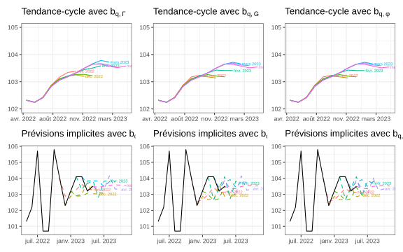
Note : L’axe des ordonnées n’est pas le même entre les différents graphiques.
Dans Dagum et Bianconcini (2023), les auteures montrent comment la théorie des RKHS permet de retrouver les cascade linear filter (CLF), qui sont des filtres alternatifs à celui de Henderson et qui n’ont pas été étudiés dans cette étude.
2.4 Approche Fidelity-Smoothness-Timeliness (FST)
Pour construire les moyennes mobiles symétriques, Grun-Rehomme et Ladiray (1994) et Gray et Thomson (1996) proposent un programme de minimisation sous contrainte qui fait un compromis entre réduction de la variance et « lissage » de la tendance (les deux articles utilisent en revanche des notations différentes). Grun-Rehomme, Guggemos, et Ladiray (2018) étendent ces approches en les appliquant à la construction des filtres asymétriques et en ajoutant un critère permettant de contrôler le déphasage. Il s’agit de l’approche Fidelity-Smoothness-Timeliness — Fidélité-Lissage-Rapidité — (FST). Pour la construction des filtres asymétriques, un quatrième critère pourrait également être rajouté qui prendrait en compte les révisions par rapport à l’utilisation d’un filtre symétrique de référence (cette méthode pourrait alors être appelée la méthode FRST — Fidelity-Revisions-Smoothness-Timeliness). Cependant, le package rjd3filters n’ayant implémenté que l’approche FST, nous nous restreignons dans cette étude à la description de l’approche sans critère de révision.
Les trois critères utilisés sont les suivants :
Fidelity (fidélité), \(F_g\) : c’est le rapport de réduction de la variance. Plus il est petit et plus la tendance-cycle estimée est un bon estimateur de la vraie tendance-cycle. \[ F_g(\boldsymbol \theta) = \sum_{k=-p}^{+f}\theta_{k}^{2}. \] \(F_g\) peut également être écrite comme une forme quadratique positive : \(F_g(\boldsymbol \theta)=\boldsymbol \theta'\boldsymbol F\boldsymbol \theta\) avec \(\boldsymbol F\) la matrice identité d’ordre \(p+f+1\).
Smoothness (lissage), \(S_g\) : \[ S_g(\boldsymbol\theta) = \sum_{j}(\nabla^{d}\theta_{j})^{2}. \] Ce critère mesure la proximité de la série lissée à une tendance polynomiale de degré \(d-1\). Henderson utilise par exemple ce critère avec \(d=3\) pour construire des moyennes mobiles conservant des polynômes de degré 2. \(S_g\) peut également s’écrire sous une forme quadratique positive \(S_g(\boldsymbol \theta)=\boldsymbol \theta'\boldsymbol S\boldsymbol \theta\) avec \(S\) une matrice symétrique d’ordre \(p+f+1\) (voir annexe 2.8.1).
Timeliness (rapidité), \(T_g\) : il mesure le déphasage entre la série initiale et la série lissée à des fréquences spécifiques. Lorsqu’un filtre linéaire est appliqué, le niveau de la série initiale est également modifié par la fonction de gain : il est donc intuitif de considérer que plus le gain est élevé, plus l’impact du déphasage le sera.
C’est pourquoi le critère de déphasage dépend des fonctions de gain et de déphasage (\(\rho_{\boldsymbol\theta}\) et \(\varphi_{\boldsymbol\theta}\)), le lien entre les deux fonctions étant fait à partir d’une fonction de pénalité \(f\)22 : \[ \int_{\omega_{1}}^{\omega_{2}}f(\rho_{\boldsymbol\theta}(\omega),\varphi_{\boldsymbol\theta}(\omega))\ud\omega. \] Comme fonction de pénalité, les auteurs suggèrent de prendre \(f\colon(\rho,\varphi)\mapsto\rho^2\sin(\varphi)^2\). Cela permet notamment d’avoir une timeliness qui peut s’écrire comme une forme quadratique positive (\(T_g(\boldsymbol \theta)=\boldsymbol \theta'\boldsymbol T\boldsymbol \theta\) avec \(\boldsymbol T\) une matrice carré symétrique d’ordre \(p+f+1\), voir Grun-Rehomme, Guggemos, et Ladiray (2018) pour la démonstration). Dans cet article nous utilisons \(\omega_1=0\) et \(\omega_2=2\pi/12\) : on ne s’intéresse qu’à des séries mensuelles et au déphasage associé aux cycles d’au minimum 12 mois.
En somme, l’approche FST consiste à minimiser une somme pondérée de ces trois critères sous certaines contraintes (généralement préservation polynomiale).
\[ \begin{cases} \underset{\boldsymbol\theta}{\min} & \alpha F_g(\boldsymbol \theta)+\beta S_g(\boldsymbol \theta)+\gamma T_g(\boldsymbol \theta) = \boldsymbol \theta'(\alpha\boldsymbol F+\beta \boldsymbol S+ \gamma \boldsymbol T)\boldsymbol \theta\\ s.t. & \boldsymbol C\boldsymbol \theta=\boldsymbol a \end{cases}. \tag{2.12}\]
Les conditions \(0\leq\alpha,\beta,\gamma\leq 1\) et \(\alpha+\beta\ne0\) garantissent que \(\alpha F_g(\boldsymbol \theta)+\beta S_g(\boldsymbol \theta)+\gamma T_g(\boldsymbol \theta)\) soit strictement convexe et donc l’unicité de la solution. Dans ce cas, la solution s’écrit \(\hat {\boldsymbol \theta} = [\alpha \boldsymbol F+\beta \boldsymbol S+ \gamma \boldsymbol T]^{-1}\boldsymbol C'\left(\boldsymbol C[\alpha \boldsymbol F+\beta \boldsymbol S+ \gamma \boldsymbol T]^{-1}\boldsymbol C'\right)^{-1}\boldsymbol a\).
Dans cette approche, les filtres asymétriques construits sont totalement indépendants des données, de la date d’estimation et du filtre symétrique choisis.
On obtient par exemple le filtre d’Henderson avec les paramètres suivants : \[\boldsymbol C=\begin{pmatrix} 1 & \cdots&1\\ -h & \cdots&h \\ (-h)^2 & \cdots&h^2 \end{pmatrix},\quad \boldsymbol a=\begin{pmatrix} 1 \\0\\0 \end{pmatrix},\quad \alpha=\gamma=0,\quad \beta=1,\quad d=3.\]
Un des inconvénients de cette approche est que les différents critères ne sont pas normalisés : leurs valeurs ne peuvent pas être comparées et n’ont donc pas de sens. Il n’y a, par exemple, pas d’interprétation à donner à un poids deux fois plus important à la timeliness qu’à la fidelity.
La figure 2.9 montre les estimations successives de la série lissée du climat des affaires dans les matériels de transport ainsi que les prévisions implicites pour un ensemble particulier de poids \(\alpha,\beta,\gamma\) (voir Section 2.6 pour la méthode utilisée pour les sélectionner). Ici les dernières estimations (lorsqu’aucun point dans le futur n’est connu) sont fortement révisées, ce qui s’observe notamment par la valeur de la dernière prévision implicite qui est éloignée des valeurs que l’on pourrait attendre pour l’évolution de l’indicateur.
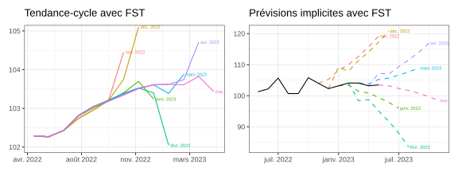
2.5 Filtres dépendant des données : trilemme ATS
Wildi et McElroy (2019) proposent une approche dépendante des données (data-dependent) pour calculer des filtres linéaires. L’idée est la même que pour le filtre FST : les moyennes mobiles sont calculées par minimisation d’une somme pondérée de critères de qualité, mais les critères sont calculés différemment. Les auteurs décomposent l’erreur quadratique moyenne de révision en un trilemme de trois quantités appelées accuracy (précision), timeliness (rapidité) et smoothness (lissage), d’où son nom ATS-trilemma.
Soient :
\(\left\{ y_{t}\right\}\) notre série temporelle en entrée23.
\(\left\{TC_{t}\right\}\) la série lissée finale (avec un filtre symétrique fini ou non), et soient respectivement \(\Gamma_s\), \(\rho_s\) et \(\varphi_s\) les fonctions de transfert, de gain et de déphasage associées à ce filtre symétrique.
\(\left\{\widehat{TC}_{t}\right\}\) une estimation de \(\left\{TC_{t}\right\}\), i.e. le résultat d’un filtre asymétrique (lorsque toutes les observations ne sont pas disponibles), et soient respectivement \(\Gamma_{\boldsymbol\theta}\), \(\rho_{\boldsymbol\theta}\) et \(\varphi_{\boldsymbol\theta}\) les fonctions de transfert, de gain et de déphasage associées à ce filtre asymétrique.
Une approche directe24, Direct Filter Approach (DFA), consiste à approcher directement la tendance-cycle finale par minimisation de l’erreur quadratique moyenne : \[ \underset{\widehat{TC}_{t}}{\min} \E{(TC_{t}-\widehat{TC}_{t})^{2}}. \] Cette approche peut être approfondie en décomposant l’erreur quadratique moyenne en plusieurs éléments d’intérêt.
Si l’on suppose que la série \(\left\{ y_{t}\right\}\) est faiblement stationnaire25 avec une densité spectrale continue \(h\), l’erreur quadratique moyenne de révision, \(\E{(TC_{t}-\widehat{TC}_{t})^{2}}\), peut s’écrire dans le domaine spectral comme : \[
\begin{aligned}
\E{(TC_{t}-\widehat{TC}_{t})^{2}}&=\frac{1}{2\pi}\int_{-\pi}^{\pi}\left|\Gamma_s(\omega)-{\Gamma_{\boldsymbol\theta}}(\omega)\right|^{2}h(\omega)\ud\omega\\
& =\frac{1}{2\pi}\times2\times\int_{0}^{\pi}\left|\Gamma_s(\omega)-{\Gamma_{\boldsymbol\theta}}(\omega)\right|^{2}h(\omega)\ud\omega.
\end{aligned}
\tag{2.13}\] On a : \[
\begin{aligned}
\left|\Gamma_s(\omega)-\Gamma_{\boldsymbol\theta}(\omega)\right|^{2} & =\rho_s(\omega)^{2}+\rho_{\boldsymbol\theta}(\omega)^{2}+2\rho_s(\omega)\rho_{\boldsymbol\theta}(\omega)\left(1-\cos(\varphi_s(\omega)-\varphi_{\boldsymbol\theta}(\omega)\right) \\
& =\left(\rho_s(\omega)-\rho_{\boldsymbol\theta}(\omega)\right)^{2}+4\rho_s(\omega)\rho_{\boldsymbol\theta}(\omega)\sin^{2}\left(\frac{\varphi_s(\omega)-\varphi_{\boldsymbol\theta}(\omega)}{2}\right).
\end{aligned}
\tag{2.14}\] L’intervalle \([0,\pi]\) peut être coupé en deux : une partie dite pass-band \([0,\omega_1]\) (l’intervalle de fréquences associé à la tendance-cycle) et une partie dite stop-band \([\omega_1,\pi]\) (l’intervalle de fréquences associé aux résidus). Dans rjd3filters le paramètre \(\omega_1\) est fixé par l’utilisateur26 et est par défaut égal à \(2\pi/12\) : pour des séries mensuelles, cela signifie que l’on souhaite conserver les cycles d’au moins 12 mois (voir Section 2.2.1).
L’erreur de l’équation 2.13 peut être décomposée en 4 quantités : \[\begin{align*} Accuracy =A_w(\boldsymbol\theta)&= 2\int_0^{\omega_1}\left(\rho_s(\omega)-\rho_{\boldsymbol\theta}(\omega)\right)^{2}h(\omega)\ud\omega,\\ Timeliness =T_w(\boldsymbol\theta)&= 8\int_0^{\omega_1}\rho_s(\omega)\rho_{\boldsymbol\theta}(\omega)\sin^{2}\left(\frac{\varphi_{\boldsymbol\theta}(\omega)}{2}\right)h(\omega)\ud\omega,\\ Smoothness =S_w(\boldsymbol\theta)&= 2\int_{\omega_1}^\pi\left(\rho_s(\omega)-\rho_{\boldsymbol\theta}(\omega)\right)^{2}h(\omega)\ud\omega,\\ Residual =R_w(\boldsymbol\theta)&= 8\int_{\omega_1}^\pi\rho_s(\omega)\rho_{\boldsymbol\theta}(\omega)\sin^{2}\left(\frac{\varphi_{\boldsymbol\theta}(\omega)}{2}\right)h(\omega)\ud\omega.\\ \end{align*}\]
En général, le résidu \(R_w\) est petit puisque \(\rho_s(\omega)\rho_{\boldsymbol\theta}(\omega)\) est proche de 0 dans l’intervalle stop-band27. Il est de plus rare que les utilisateurs s’intéressent aux propriétés de déphasage dans les fréquences stop-band. C’est pourquoi, pour la construction de filtres linéaires les auteurs suggèrent de faire une minimisation d’une somme pondérée des trois premiers critères : \[ \mathcal{M}(\vartheta_{1},\vartheta_{2})=\vartheta_{1}T_w(\boldsymbol\theta)+\vartheta_{2}S_w(\boldsymbol\theta)+(1-\vartheta_{1}-\vartheta_{2})A_w(\boldsymbol\theta). \] Comme le montrent McElroy et Wildi (2020), cette méthode peut également être étendue au cas multivarié, ce qui permet de prendre en compte les corrélations entre les composantes de différentes séries.
Un des inconvénients de cette méthode est qu’il n’y a pas de garantie d’unicité de la solution. En revanche, son avantage par rapport à la méthode FST (Section 2.4) est que la décomposition de l’erreur quadratique moyenne permet de normaliser les différents indicateurs, et les coefficients \(\vartheta_{1}\), \(\vartheta_{2}\) et \(1-\vartheta_{1}-\vartheta_{2}\) peuvent être comparés entre eux.
Cette méthode étant totalement dépendante des données, son intégration dans des algorithmes non-paramétriques tels que X-11 serait compliquée. C’est pourquoi elle n’est pour l’instant pas comparée aux autres. Pour avoir des critères qui ne dépendent pas des données, une idée serait de fixer la densité spectrale, par exemple à celle d’un bruit blanc (\(h_{WN}(x)=1\)) ou d’une marche aléatoire (\(h_{RW}(x)=\frac{1}{2(1-\cos(x))}\)). C’est ce qui est implémenté dans la fonction rjd3filters::dfa_filter().
2.6 Comparaison des différentes méthodes
Les différentes méthodes de construction de moyennes mobiles asymétriques sont comparées sur des données simulées et des données réelles.
Pour toutes les séries, un filtre symétrique de 13 termes est utilisé. Ces méthodes sont également comparées aux estimations obtenues en prolongeant la série par un modèle ARIMA28 puis en appliquant un filtre symétrique de Henderson de 13 termes.
La performance des différentes méthodes est jugée sur des critères relatifs aux révisions (entre deux estimations consécutives et par rapport à l’estimation finale) et sur le nombre de périodes nécessaires pour détecter les points de retournements.
2.6.1 Séries simulées
2.6.1.1 Méthodologie
En suivant une méthodologie proche de celle de Darné et Dagum (2009), neuf séries mensuelles sont simulées entre janvier 1960 et décembre 2020 avec différent niveaux de variabilité. Chaque série simulée \(y_t= C_t+ T_t + I_t\) peut s’écrire comme la somme de trois composantes :
le cycle \(C_t = \rho [\cos (2 \pi t / \lambda) +\sin (2 \pi t / \lambda)]\), \(\lambda\) est fixé à 72 (cycles de 6 ans, il y a donc 19 points de retournement détectables) ;
la tendance \(T_t = T_{t-1} + \nu_t\) avec \(\nu_t \sim \mathcal{N}(0, \sigma_\nu^2)\), \(\sigma_\nu\) étant fixé à \(0,08\) ;
et l’irrégulier \(I_t = e_t\) avec \(e_t \sim \mathcal{N}(0, \sigma_e^2)\).
Pour les différentes simulations, nous faisons varier les paramètres \(\rho\) et \(\sigma_e^2\) afin d’avoir des séries avec différents rapports signal sur bruit (voir figure 2.10) :
Fort rapport signal sur bruit (c’est-à-dire un I-C ratio faible et une faible variabilité) : \(\sigma_e^2=0,2\) et \(\rho = 3,0,\, 3,5\) ou \(4,0\) (I-C ratio compris entre 0,9 et 0,7) ;
Rapport signal sur bruit moyen (c’est-à-dire un I-C ratio moyen et une variabilité moyenne) : \(\sigma_e^2=0,3\) et \(\rho = 1,5,\, 2,0\) ou \(3,0\) (I-C ratio compris entre 2,3 et 1,4) ;
Faible rapport signal sur bruit (c’est-à-dire un I-C ratio fort et une forte variabilité) : \(\sigma_e^2=0,4\) et \(\rho = 0,5,\, 0,7\) ou \(1,0\) (I-C ratio compris entre 8,9 et 5,2).
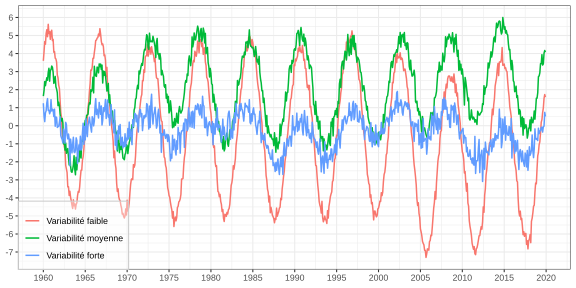
Pour chaque série et chaque date, la tendance-cycle est estimée en utilisant les différentes méthodes présentées dans ce rapport. Pour les régressions polynomiales locales, les filtres asymétriques sont calibrés en utilisant l’I-C ratio estimé à chaque date (en appliquant un filtre de Henderson de 13 termes) et pour la méthode FST, un quadrillage du plan est réalisé avec un pas de \(0,05\) et avec comme contraintes linéaires la préservation des polynômes de degrés 0 à 3. Trois critères de qualité sont également calculés :
- Calcul du déphasage dans la détection des points de retournement. La définition de Zellner, Hong, et Min (1991) est utilisée pour déterminer les points de retournement :
- on parle de redressement (upturn) lorsqu’on passe d’une phase de récession à une phase d’expansion de l’économie. C’est le cas à la date \(t\) lorsque \(y_{t-3}\geq y_{t-2}\geq y_{t-1}<y_t\leq y_{t+1}\).
- on parle de ralentissement (downturn) lorsqu’on passe d’une phase d’expansion à une phase de récession. C’est le cas à la date \(t\) lorsque \(y_{t-3}\leq y_{t-2}\leq y_{t-1}>y_t\geq y_{t+1}\).
Il faut donc au moins 2 mois pour détecter un point de retournement.
Le déphasage est souvent défini comme le nombre de mois nécessaires pour détecter le bon point de retournement (i.e., le point de retournement sur la composante cyclique). Nous utilisons ici un critère légèrement modifié : le déphasage est défini comme le nombre de mois nécessaires pour détecter le bon point de retournement sans aucune révision future. Il peut en effet arriver que le bon point de retournement soit détecté par des filtres asymétriques mais ne le soit pas avec l’estimation finale avec un filtre symétrique (c’est le cas de 41 points de retournements sur l’ensemble des 9 séries avec les filtres asymétriques de Musgrave) ou qu’il y ait des révisions dans les estimations successives (c’est le cas de 7 points de retournements sur l’ensemble des 9 séries avec les filtres asymétriques de Musgrave). Finalement, relativement peu de points de retournement sont détectés à la bonne date avec l’estimation finale. Avec le filtre de Henderson de 13 termes, 18 sont correctement détectés sur les séries avec une faible variabilité (sur les 57 possibles), 11 sur les séries à variabilité moyenne et 12 sur les séries à forte variabilité.
- on parle de redressement (upturn) lorsqu’on passe d’une phase de récession à une phase d’expansion de l’économie. C’est le cas à la date \(t\) lorsque \(y_{t-3}\geq y_{t-2}\geq y_{t-1}<y_t\leq y_{t+1}\).
- Calcul de deux critères de révisions : la moyenne des écarts relatifs entre la \(q\)e estimation et la dernière estimation \(MAE_{fe}(q)\) et la moyenne des écarts relatifs entre la \(q\)e et la \(q+1\)e estimation \(MAE_{qe}(q)\) \[ MAE_{fe}(q)=\mathbb E\left[ \left|\frac{ y_{t|t+q} - y_{t|last} }{ y_{t|last} }\right| \right] \quad\text{et}\quad MAE_{qe}(q)=\mathbb E\left[ \left|\frac{ y_{t|t+q} - y_{t|t+q+1} }{ y_{t|t+q+1} }\right| \right]. \]
Pour le choix des poids dans l’approche FST, l’idée retenue dans cette étude est de faire un quadrillage du plan \([0,1]^3\) avec un pas de 0,05 et en imposant \(\alpha + \beta + \gamma = 1\)29. Pour chaque combinaison de poids, quatre ensembles de moyennes mobiles sont construits en forçant dans la minimisation la préservation de polynômes de degré 0 à 3. Le filtre symétrique utilisé est toujours celui de Henderson. Le degré de préservation polynomiale et l’ensemble de poids retenus sont ceux minimisant (en moyenne) le déphasage sur les séries simulées : pour l’ensemble des degrés de liberté, il s’agit toujours du filtre préservant les polynômes de degré 2 avec \(\alpha = 0,00\) (fidelity), \(\beta =0,05\) (smoothness) et \(\gamma = 0,95\) (timeliness).
2.6.1.2 Comparaison
En excluant pour l’instant les paramétrisations locales des filtres polynomiaux, c’est le filtre FST qui semble donner les meilleurs résultats en termes de déphasage dans la détection des points de retournement (figure 2.11), suivi du filtre polynomial linéaire-constant (LC)30. Les performances sont relativement proches de celles obtenues en prolongeant la série grâce à un modèle ARIMA. Toutefois, lorsque la variabilité est faible, le filtre LC semble donner de moins bons résultats et c’est le filtre polynomial quadratique-linéaire (QL) qui semble donner les meilleurs résultats. C’est le filtre \(b_{q,\varphi}\) qui minimise le déphasage qui donne les moins bons résultats. Les autres filtres issus des espaces de Hilbert à noyau reproduisant (RKHS) ont également une grande variabilité en termes de déphasage. Cela peut s’expliquer par le fait que la courbe des coefficients des moyennes mobiles asymétriques sont assez éloignées des coefficients du filtre symétrique31 : il y a donc potentiellement beaucoup de révisions dans la détection des points de retournement. En effet, lorsque le déphasage est défini comme la première date à laquelle le bon point de retournement est détecté, c’est le filtre \(b_{q,G}\) qui donne les meilleurs résultats.
Pour les séries à variabilité moyenne, la paramétrisation locale des filtres LC et QL permet de réduire le déphasage. Pour les séries à variabilité forte, le déphasage est uniquement réduit en utilisant les paramètres finaux \(\hat\delta\) : l’estimation en temps réel semble ajouter plus de variabilité. Pour les séries à variabilité faible, les performances semblent légèrement améliorées uniquement avec le filtre LC.
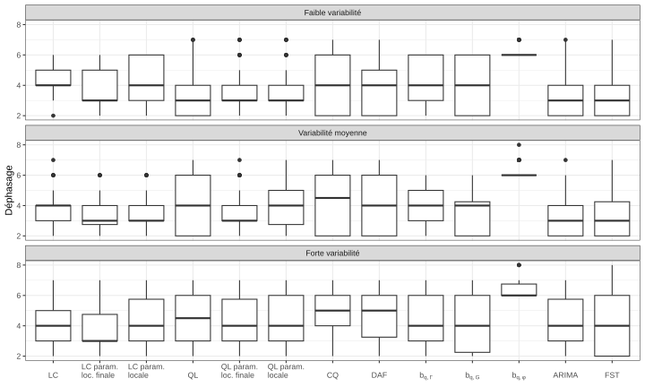
Notes: Filtres polynomiaux : Linear-Constant (LC) et Quadratic-Linear (QL) avec paramétrisation locale de l’IC-ratio (en utilisant un estimateur en temps-réel et l’estimateur final de ce paramètre), Cubic-Quadratic (CQ) et direct (DAF).
Filtres RKHS : minimisant l’erreur quadratique moyenne (\(b_{q,\Gamma}\)), les révisions liées à la fonction de gain (\(b_{q,G}\)) et celles liées au déphasage (\(b_{q,\varphi}\)).
ARIMA : prolongement de la série par un ARIMA détecté automatiquement et utilisation du filtre symétrique d’Henderson.
FST : filtre obtenu en préservant les polynômes de degré 2 et avec \(\alpha=0,00\), \(\beta=0,05\) et \(\gamma=0,95\).
Concernant les révisions, la variabilité de la série a peu d’impact sur les performances respectives des différentes méthodes mais joue sur les ordres de grandeurs, c’est pourquoi les résultats ne sont présentés qu’avec les séries à variabilité moyenne (table 2.4). Globalement, les filtres LC minimisent toujours les révisions (avec globalement peu d’impact de la paramétrisation locale des filtres) et les révisions sont plus importantes avec les filtres polynomiaux cubique-quadratique (CQ), direct (DAF) et les filtres RKHS autres que \(b_{q,\varphi}\). Par ailleurs, c’est le filtre \(b_{q,\varphi}\) qui conduit à la révision la plus grande entre l’avant-dernière et la dernière estimation, ce qui s’explique par la différence importante entre la courbe des coefficients de la dernière moyenne mobile asymétrique et celle du filtre symétrique. Les autres filtres RKHS, \(b_{q,\Gamma}\) et \(b_{q,G}\), conduisent eux à de fortes révisions entre la quatrième et la cinquième estimation.
Pour le filtre QL, il y a une forte révision entre la deuxième et la troisième estimation : cela peut venir du fait que pour la deuxième estimation (lorsqu’on connait un point dans le futur), le filtre QL associe un poids plus important à l’estimation en \(t+1\) qu’à l’estimation en \(t\), ce qui crée une discontinuité. Cette révision est fortement réduite avec la paramétrisation locale du filtre. Pour les filtres polynomiaux autres que le filtre LC, les révisions importantes à la première estimation étaient prévisibles au vu de la courbe des coefficients : un poids très important est associé à l’observation courante et il y une forte discontinuité entre la moyenne mobile utilisée pour l’estimation en temps réel (lorsqu’aucun point dans le futur n’est connu) et les autres moyennes mobiles.
Enfin, pour le filtre issu de la méthode FST, la première estimation est fortement révisée, ce qui pouvait être attendu au vu de l’analyse de la courbe de coefficients (figure 2.25). Ainsi, pour cette méthode, utiliser le même ensemble de poids (\(\alpha\), \(\beta\) et \(\gamma\)) pour construire l’ensemble des moyennes mobiles asymétriques ne semble pas pertinent : pour le filtre utilisé en temps réel (lorsqu’aucun point dans le futur est connu), on pourrait préférer donner un poids plus important à la fidélité afin de minimiser ces révisions.
Le prolongement de la série par un modèle ARIMA donne des révisions avec les dernières estimations du même ordre de grandeur que le filtre LC mais des révisions légèrement plus importantes entre les estimations consécutives, notamment entre la quatrième et la cinquième estimation (on pouvait s’y attendre comme souligné dans la Section 2.2.3.1).
| Méthode | \(q=0\) | \(q=1\) | \(q=2\) | \(q=3\) | \(q=4\) | \(q=5\) |
|---|---|---|---|---|---|---|
| \(MAE_{fe}(q) = \mathbb E\left[\left|(y_{t|t+q} - y_{t|last})/y_{t|last}\right|\right]\) | ||||||
| LC | 0,21 | 0,10 | 0,03 | 0,03 | 0,03 | 0,01 |
| LC param. locale (finale) | 0,19 | 0,09 | 0,03 | 0,03 | 0,03 | 0,01 |
| LC param. locale | 0,29 | 0,10 | 0,03 | 0,03 | 0,03 | 0,01 |
| QL | 0,33 | 0,10 | 0,04 | 0,04 | 0,03 | 0,01 |
| QL param. locale (finale) | 0,21 | 0,10 | 0,03 | 0,03 | 0,03 | 0,01 |
| QL param. locale | 0,30 | 0,10 | 0,04 | 0,03 | 0,03 | 0,01 |
| CQ | 0,45 | 0,13 | 0,13 | 0,09 | 0,06 | 0,02 |
| DAF | 0,47 | 0,15 | 0,15 | 0,09 | 0,06 | 0,02 |
| \(b_{q,\Gamma}\) | 0,63 | 0,21 | 0,03 | 0,09 | 0,09 | 0,04 |
| \(b_{q,G}\) | 0,83 | 0,37 | 0,03 | 0,09 | 0,09 | 0,04 |
| \(b_{q,\varphi}\) | 0,31 | 0,11 | 0,03 | 0,05 | 0,07 | 0,09 |
| ARIMA | 0,22 | 0,10 | 0,03 | 0,03 | 0,03 | 0,01 |
| FST | 0,36 | 0,13 | 0,05 | 0,05 | 0,04 | 0,02 |
| \(MAE_{ce}(q)=\mathbb E\left[\left|(y_{t|t+q} -y_{t|t+q+1})/y_{t|t+q+1}\right|\right]\) | ||||||
| LC | 0,19 | 0,10 | 0,02 | 0,01 | 0,07 | 0,01 |
| LC param. locale (finale) | 0,20 | 0,10 | 0,03 | 0,01 | 0,05 | 0,01 |
| LC param. locale | 0,24 | 0,11 | 0,03 | 0,01 | 0,05 | 0,01 |
| QL | 0,29 | 3,46 | 0,00 | 0,03 | 0,04 | 0,01 |
| QL param. locale (finale) | 0,31 | 0,11 | 0,02 | 0,01 | 0,04 | 0,01 |
| QL param. locale | 0,24 | 0,16 | 0,00 | 0,03 | 0,04 | 0,01 |
| CQ | 0,43 | 0,02 | 0,10 | 0,07 | 0,05 | 0,02 |
| DAF | 0,66 | 0,24 | 0,11 | 0,14 | 0,06 | 0,02 |
| \(b_{q,\Gamma}\) | 0,38 | 0,32 | 0,09 | 0,00 | 0,41 | 0,04 |
| \(b_{q,G}\) | 0,70 | 0,46 | 0,10 | 0,00 | 0,43 | 0,04 |
| \(b_{q,\varphi}\) | 0,22 | 0,16 | 0,08 | 0,05 | 0,03 | 0,09 |
| ARIMA | 0,21 | 0,13 | 0,02 | 0,02 | 0,25 | 0,01 |
| FST | 0,31 | 0,11 | 0,02 | 0,02 | 0,03 | 0,02 |
Note : Le paramètre \(q\) désigne le nombre de points dans le futur utilisés par la moyenne mobile (pour \(q=0\), estimation en temps réel).
2.6.2 Série réelle
Les différences entre les méthodes sont également illustrées à partir d’un exemple issu de la base FRED-MD (McCracken et Ng (2016)) contenant des séries économiques sur les États-Unis32. La série étudiée est le niveau d’emploi aux États-Unis (série CE16OV, utilisée en logarithme) autour du point de retournement de février 2001, cohérent avec la datation mensuelle des points de retournement. Ce point et cette série ont été choisis car le retournement conjoncturel est particulièrement visible sur la série brute (voir figure 2.12 présentant les prévisions implicites), que cette série est utilisée pour la datation des cycles conjoncturels de l’économie et que la base FRED-MD facilite la reproductibilité des résultats (grâce à la disponibilité des séries publiées aux dates passées). Cette série a une variabilité moyenne33 (un filtre symétrique de 13 termes est donc adapté). La figure 2.13 montre les estimations successives de la tendance-cycle avec les différentes méthodes étudiées.
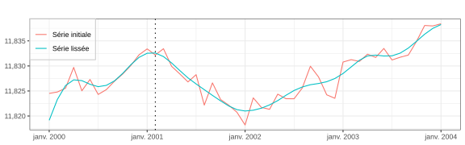
Sur cette série, le déphasage est de 6 mois pour les méthodes RKHS, la méthode LC, la méthode CQ et le prolongement par ARIMA de la série. Sauf pour la méthode LC (où le point de retournement est d’abord détecté en janvier 2001), le déphasage élevé provient de révisions dans le point de retournement détecté dans les estimations intermédiaires (même si le bon point de retournement est détecté au bout de 2 mois, il ne l’est plus au bout de 3 mois). Il est de deux mois pour les autres méthodes (QL, DAF et FST).
La paramétrisation locale ne permet pas ici de réduire le déphasage mais permet de réduire les révisions. Les polynomiales CQ et DAF conduisent à plus de variabilité dans les estimations intermédiaires, en particulier en février 2001. Concernant les filtres RKHS, les estimations intermédiaires du filtre \(b_{q,\varphi}\) semblent très erratiques, ce qui s’explique, encore une fois, par le fait que les moyennes mobiles asymétriques utilisées lorsqu’on se rapproche du cas symétrique sont éloignées de la moyenne mobile symétrique d’Henderson. Les filtres \(b_{q,\Gamma}\) et \(b_{q,G}\) conduisent à des estimations intermédiaires relativement constantes (estimations en temps réel proches des estimations lorsque quelques points dans le futur sont connus) : ces estimations intermédiaires (notamment celles en temps-réel) sont peu cohérentes en période de points de retournement et conduisent, dans ce cas, à un déphasage élevé.
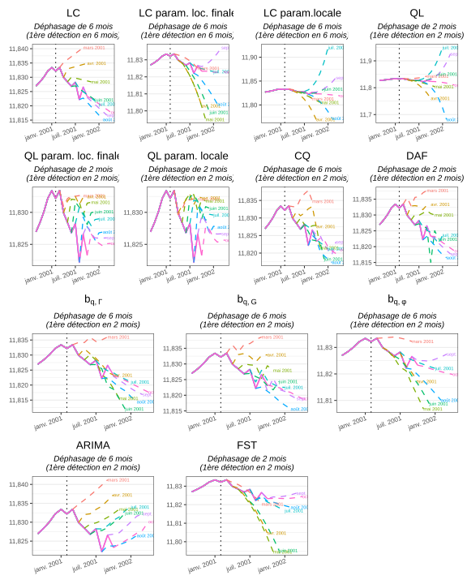
Notes: Filtres polynomiaux : Linear-Constant (LC) et Quadratic-Linear (QL) avec paramétrisation locale de l’IC-ratio (en utilisant un estimateur en temps-réel et l’estimateur final de ce paramètre), Cubic-Quadratic (CQ) et direct (DAF).
Filtres RKHS : minimisant l’erreur quadratique moyenne (\(b_{q,\Gamma}\)), les révisions liées à la fonction de gain (\(b_{q,G}\)) et celles liées au déphasage (\(b_{q,\varphi}\)).
ARIMA : prolongement de la série par un ARIMA détecté automatiquement et utilisation du filtre symétrique d’Henderson.
FST : filtre obtenu en préservant les polynômes de degré 2 et avec \(\alpha=0,00\), \(\beta=0,05\) et \(\gamma=0,95\).
La qualité des estimations intermédiaires peut également être analysée grâces aux prévisions implicites des différentes méthodes (figure 2.14). Pour rappel, il s’agit des prévisions de la série brute qui, en appliquant le filtre symétrique de Henderson sur la série prolongée, donnent les mêmes estimations que les moyennes mobiles asymétriques. Les prévisions du modèle ARIMA sont naïves et ne prennent pas en compte le point de retournement, contrairement aux autres méthodes. Autour du point de retournement, les prévisions implicites de la méthode FST sont peu plausibles (car assez éloignées de l’estimation finale), essentiellement du fait de la moyenne mobile utilisée pour l’estimation en temps réel (et donc pour la prévision à l’horizon de 6 mois). Enfin, la paramétrisation locale du filtre QL permet d’aboutir à des prévisions bien plus cohérentes même si le déphasage n’est pas modifié.
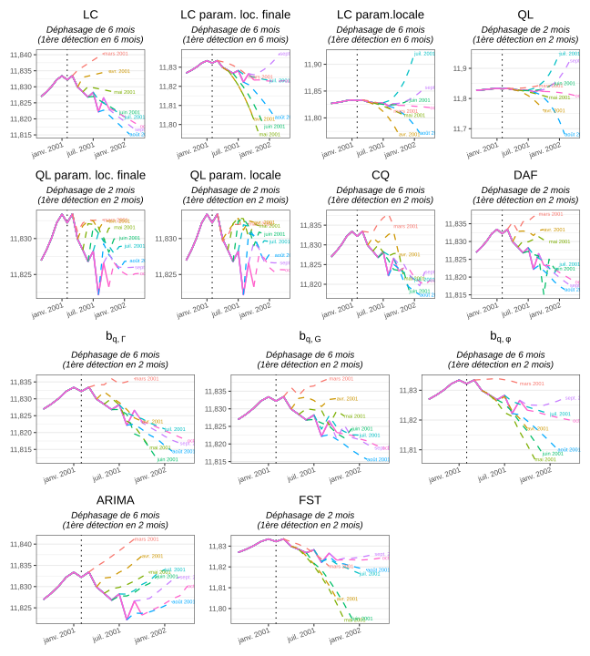
Note : L’axe des ordonnées n’est pas le même entre les différents graphiques.
2.6.3 Discussion
Plusieurs enseignements peuvent être tirés de cette analyse empirique sur données simulées et réelles.
Sur les méthodes polynomiales locales, chercher à préserver des tendances polynomiales de degré supérieur à 2 (méthodes cubique-quadratique, CQ, et directe, DAF) augmente la variance des estimations (et donc l’ampleur des révisions) et le délai pour détecter des points de retournement. Ainsi, l’estimation en temps réel des méthodes utilisant les filtres asymétriques directs (DAF) peut être facilement améliorée en utilisant le filtre linéaire-constant (LC) ou quadratique-linéaire (QL). C’est par exemple le cas de la méthode de désaisonnalisation STL (Seasonal-Trend decomposition based on Loess) proposée par R. B. Cleveland et al. (1990) qui modélise par défaut une tendance locale de degré 1 : le gain à utiliser la méthode LC est donc dans ce cas limité mais il peut être important lorsque ce degré est modifié par l’utilisateur.
La paramétrisation locale des filtres polynomiaux locaux permet d’améliorer la qualité des estimations, surtout pour le filtre QL. Même lorsque le déphasage n’est pas diminué, elle permet de réduire les révisions et d’avoir des estimations plus cohérentes, notamment en termes de prévisions implicites. De plus, estimer localement et en temps-réel les paramètres des méthodes polynomiale permet d’améliorer les estimations.
Concernant les méthodes fondées sur les espaces de Hilbert à noyau reproduisant (RKHS), les deux premières estimations des filtres \(b_{q,\Gamma}\) et \(b_{q,G}\) semblent peu cohérentes (ce qui a peu d’impact sur le déphasage puisqu’il faut au moins 2 mois pour détecter un point de retournement), comme les dernières estimations du filtre \(b_{q,\varphi}\) (ce qui peut provenir d’un problème d’optimisation). Cela suggère que la méthode utilisée pour calibrer ces filtres n’est pas optimale pour tous les horizons de prévision. En effet, pour les premières estimations, on cherche plutôt à minimiser le déphasage (\(b_{q,\varphi}\)) et lorsque que l’on se rapproche du cas symétrique (lorsqu’au moins 4 points dans le futur sont connus, \(q \geq 4\)) on cherche plutôt à minimiser les révisions (\(b_{q,\Gamma}\) ou \(b_{q,G}\)). Les performances du filtre \(b_{q,\varphi}\) pourraient ainsi sûrement être améliorées en utilisant d’autres moyennes mobiles lorsqu’on se rapproche du filtre symétrique (\(q \geq 4\)).
Pour l’approche Fidelity-Smoothness-Timeliness (FST), les poids retenus pour les simulations (\(\alpha = 0,00\) fidelity, \(\beta =0,05\) smoothness et \(\gamma = 0,95\) timeliness) semblent donner de bons résultats en termes de déphasage et de révisions lorsqu’au moins un point dans le futur est connu (\(q\geq1\)). Les critères utilisés dans cette méthode n’étant pas normalisés, les poids retenus reviennent à donner un poids plus important à la timeliness pour les premières estimations et un poids plus important à la smoothness lorsqu’on se rapproche du cas d’utilisation du filtre symétrique. En effet, plus \(q\) augmente (i.e., plus on utilise de points dans le futur), plus le déphasage et donc le critère associé à la timeliness est petit : le poids associé à la smoothness augmente donc et les moyennes mobiles trouvées se rapprochent du filtre symétrique d’Henderson (qui peut être construit en ne minimisant que la smoothness). En revanche, pour l’estimation en temps-réel (\(q=0\)), les statistiques sur les révisions suggèrent que l’on pourrait améliorer les résultats en utilisant d’autres pondérations (par exemple avec un poids non nul à la fidelity). Cela suggère également que si l’on utilisait la méthode ATS, où les critères sont normalisés, il faudrait sûrement associer un poids décroissant à la timeliness en fonction de l’horizon de prévision.
Enfin, dans cet article et dans ceux associés aux méthodes étudiées, les filtres asymétriques sont appliqués et comparés sur des séries déjà désaisonnalisées ou sans saisonnalité (séries simulées). Les révisions et donc le déphasage sont limités à 6 mois (lorsque le filtre symétrique est de 13 termes) et cela a l’avantage d’isoler les impacts des différents filtres des autres processus inhérents à la désaisonnalisation. Il y a toutefois deux inconvénients à cette simplification :
D’une part, l’estimation de la série désaisonnalisée dépend de la méthode utilisée pour extraire la tendance-cycle. Le choix de la méthode utilisée pour l’estimation de la tendance-cycle peut donc avoir un impact bien au-delà de 6 mois.
D’autre part, les moyennes mobiles étant des opérateurs linéaires, ils sont sensibles à la présence de points atypiques. L’application directe des méthodes peut donc conduire à des estimations biaisées, du fait de leur présence, alors que les méthodes de désaisonnalisation (comme la méthode X-13ARIMA) ont un module de correction des points atypiques. Par ailleurs, comme notamment montré par Dagum (1996), le filtre symétrique final utilisé par X-13ARIMA pour extraire la tendance-cycle (et donc celui indirectement utilisé lorsqu’on applique les méthodes sur les séries désaisonnalisées) laisse passer environ 72 % des cycles de 9 ou 10 mois (généralement associés à du bruit plutôt qu’à la tendance-cycle). Les filtres asymétriques finaux amplifient même les cycles de 9 ou 10 mois. Cela peut avoir pour conséquence l’introduction d’ondulations indésirables, c’est-à-dire la détection de faux points de retournement. Ce problème est réduit par la correction des points atypiques (ces cycles étant considérés comme de l’irrégulier). C’est ainsi que le Nonlinear Dagum Filter (NLDF) a été développé et consiste à :
appliquer l’algorithme de correction des points atypiques de X-13ARIMA sur la série désaisonnalisée, puis de la prolonger par un modèle ARIMA ;
effectuer une nouvelle correction des points atypiques en utilisant un seuil bien plus strict et appliquer ensuite le filtre symétrique de 13 termes. En supposant une distribution normale cela revient à modifier 48 % des valeurs de l’irrégulier.
Les cascade linear filter (CLF), notamment étudiés dans Dagum et Bianconcini (2023), correspondent à une approximation des NLDF en utilisant un filtre de 13 termes et lorsque les prévisions sont obtenues à partir d’un modèle ARIMA(0,1,1) où \(\theta=0,40.\)
Une piste d’étude serait alors d’étudier plus précisément l’effet des points atypiques sur l’estimation de la tendance-cycle et la détection des points de retournement, mais aussi d’explorer de nouveaux types de filtres asymétriques fondés sur des méthodes robustes (comme les régressions locales robustes, les médianes mobiles, etc.).
2.7 Conclusion
Pour l’analyse conjoncturelle, la majorité des statisticiens fait directement ou indirectement appel à des méthodes d’extraction de la tendance-cycle. Elles sont par exemple utilisées pour réduire le bruit d’un indicateur afin d’en améliorer son analyse, et les modèles utilisés (comme les modèles de prévision) mobilisent généralement des séries désaisonnalisées qui s’appuient sur ces méthodes.
Le premier apport de cette étude est d’unifier la théorie autour des méthodes de construction des filtres asymétriques pour l’estimation en temps réel de la tendance-cycle. Toutes ces méthodes peuvent se voir comme des cas particuliers d’une formulation générale de construction des moyennes mobiles, ce qui permet de montrer leurs similitudes et leurs différences et ainsi les comparer plus facilement. Elles sont par ailleurs facilement mobilisables et comparables grâce à leur implémentation dans le package R rjd3filters. Celui-ci permet d’utiliser plusieurs outils, comme la construction des prévisions implicites, qui peuvent aider les statisticiens à évaluer la qualité des estimations récentes des différents filtres.
La comparaison des différentes méthodes permet de tirer quelques enseignements pour la construction de ces moyennes mobiles.
Premièrement, en période de retournement conjoncturel, des filtres asymétriques utilisés comme alternative au prolongement de la série par modèle ARIMA peuvent permettre de réduire les révisions des estimations intermédiaires de la tendance-cycle et une détection plus rapide des points de retournement.
Deuxièmement, en fin de période, modéliser des tendances polynomiales de degré supérieur à trois (cubique-quadratique, CQ, et directe, DAF) semble introduire de la variance dans les estimations (et donc plus de révisions) sans permettre de détection plus rapide des points de retournement. En fin de période, pour l’estimation de la tendance-cycle, nous pouvons donc nous restreindre aux méthodes modélisant des tendances polynomiales de degré au plus 2 (linéaire-constante, LC, et quadratique-linéaire, QL). Par ailleurs, paramétrer localement les filtres polynomiaux permet de détecter plus rapidement les points de retournement (surtout pour le filtre QL). Même lorsque le déphasage n’est pas diminué, la paramétrisation locale est recommandée car elle permet de réduire les révisions et d’avoir des estimations intermédiaires plus cohérentes avec les évolutions futures attendues. En revanche, avec ces méthodes, la longueur du filtre utilisé doit être adaptée à la variabilité de la série : si le filtre utilisé est trop long (c’est-à-dire si la variabilité de la série est « faible »), conserver des tendances polynomiale de degré au plus 1 (méthode LC) produit de moins bons résultats en termes de détection des points de retournement.
Enfin, sur les méthodes s’appuyant sur l’optimisation d’une somme pondérée de certains critères (espaces de Hilbert à noyau reproduisant, RKHS, approche Fidelity-Smoothness-Timeliness, FST, ou approche accuracy-timeliness-smoothness, ATS), les performances pourraient être améliorées en utilisant des critères différents pour les différents filtres asymétriques. En effet, pour les premières estimations (lorsque peu de points dans le futur sont connus), le conjoncturiste peut préférer minimiser le déphasage alors que lorsqu’on se rapproche du cas d’utilisation du filtre symétrique (c’est-à-dire lorsqu’on se rapproche des estimations finales), le critère le plus important pourrait être la réduction des révisions. Par ailleurs, puisque les méthodes RKHS ou ATS sont sujettes à des problèmes d’optimisation (non unicité de la solution), une attention particulière doit être portée aux résultats de ces méthodes. Pour le filtre RKHS \(b_{q,\varphi}\), minimisant le déphasage, cela conduit par exemple à de grandes révisions entre l’avant-dernière et la dernière estimation.
Cette étude pourrait être étendue de plusieurs manières.
Tout d’abord, elle n’est pas exhaustive et pourrait donc être complétée.
Parmi les approches étudiées, l’extension proposée aux méthodes polynomiales locales afin d’ajouter un critère sur le déphasage pourrait donner des résultats prometteurs. Parmi les approches récentes non étudiées, nous pouvons citer Vasyechko et Grun-Rehomme (2014) qui utilisent le noyau d’Epanechnikov pour construire des filtres asymétriques de 13 termes34 ; Feng et Schäfer (2021) qui proposent, en fin de période, l’utilisation de poids optimaux (au sens de l’erreur quadratique moyenne) dans les régressions polynomiales locales ; ou Dagum et Bianconcini (2023) qui étudient également des filtres symétriques alternatifs à celui d’Henderson.
Parmi les pistes d’extension, on pourrait s’intéresser à l’impact de la longueur des filtres dans la détection des points de retournement. En effet, les filtres asymétriques sont calibrés avec des indicateurs calculés pour l’estimation des filtres symétriques (par exemple pour déterminer automatiquement sa longueur), alors qu’une estimation locale pourrait être préférée. Par ailleurs, nous nous sommes concentrés uniquement sur les séries mensuelles dont le filtre symétrique est de 13 termes, mais les résultats peuvent être différents si le filtre symétrique étudié est plus long/court et si l’on étudie des séries à d’autres fréquences (trimestrielles ou journalières par exemple).
Une autre piste pourrait être d’étudier l’impact des points atypiques : les moyennes mobiles, comme tout opérateur linéaire, sont très sensibles à la présence des points atypiques. Pour limiter leur impact, dans X-13ARIMA une forte correction des points atypiques est effectuée sur la composante irrégulière avant d’appliquer les filtres pour extraire la tendance-cycle. Cela amène donc à étudier l’impact de ces points sur l’estimation de la tendance-cycle et des points de retournement, mais aussi à explorer de nouveaux types de filtres asymétriques fondés sur des méthodes robustes (comme les régressions locales robustes ou les médianes mobiles).
2.8 Annexes
2.8.1 Synthèse des liens entre les différentes méthodes de construction de moyennes mobiles
Cette annexe montre comment tous les filtres étudiés peuvent se retrouver à partir d’une formule générale de construction des moyennes mobiles. Elle décrit également les relations d’équivalences entre les différentes méthodes. Enfin, des graphiques synthétiques résument ces propriétés.
2.8.1.1 Formule générale de construction des filtres
Pour établir une formule générale englobant les principaux filtres linéaires, Grun-Rehomme, Guggemos, et Ladiray (2018) définissent deux critères. En changeant légèrement les notations utilisées par les auteurs afin d’avoir une formulation plus générale, ces deux critères peuvent s’écrire : \[ I(\boldsymbol\theta,q,y_t,u_t)=\E{(\Delta^{q}(M_{\boldsymbol\theta} y_t-u_t))^{2}} \tag{2.15}\] \[ J(\boldsymbol\theta,f, \omega_1,\omega_2)=\int_{\omega_1}^{\omega_2} f\left[\rho_{\boldsymbol\theta}(\omega), \varphi_{\boldsymbol\theta} (\omega), \omega\right] \ud \omega \tag{2.16}\] où \(y_t\) est la série étudiée, \(u_t\) une série de référence35 et \(\Delta\) est l’opérateur différence (\(\Delta y_t=y_t-y_{t-1}\) et \(\Delta^q=\underbrace{\Delta \circ \dots \circ \Delta}_{q\text{ fois}}\) pour \(q\in\N\)). Dans la majorité des cas, la fonction \(f\) ne dépendra que de la fonction de gain, \(\rho_{\boldsymbol\theta}\), et de la fonction de déphasage, \(\varphi_{\boldsymbol\theta}\). Dans ce cas, par simplification on écrira \(f\left[\rho_{\boldsymbol\theta}(\omega), \varphi_{\boldsymbol\theta} (\omega), \omega\right] = f\left[\rho_{\boldsymbol\theta}(\omega), \varphi_{\boldsymbol\theta} (\omega)\right]\).
La majorité des filtres linéaires peut s’obtenir par une minimisation d’une somme pondérée de ces critères, sous contrainte linéaire sur les coefficients : \[ \begin{cases} \underset{\boldsymbol\theta}{\min} & \sum_i \alpha_i I(\boldsymbol\theta,\, q_i,\, y_t,\, u_t^{(i)})+ \beta_iJ(\boldsymbol\theta,\, f_i,\, \omega_{1,i},\, \omega_{2,i})\\ s.t. & \boldsymbol C\boldsymbol \theta=\boldsymbol a \end{cases} \]
En effet :
L’extension des méthodes polynomiales de Proietti et Luati (2008) présentée dans la Section 2.3.3 revient en effet à minimiser une somme pondérée de l’erreur quadratique de révision : \[ \E{\left( \sum_{i=-h}^h\theta^s_{i}y_{t+s}-\sum_{i=-h}^qv_iy_{t+s} \right)^2} = I(v,\,0,\,y_t,\,M_{\boldsymbol \theta^s} y_t), \] et du critère de timeliness : \[ T_g(\boldsymbol\theta) = J(f\colon(\rho,\varphi)\mapsto\rho^2\sin(\varphi)^2,\,\omega_1, \,\omega_2). \] sous une contrainte linéaire.
Les critères des filtres symétriques de Gray et Thomson (1996) (Section 2.3.4) sont : \[\begin{align*} F_{GT}(\boldsymbol\theta)&=I(\boldsymbol\theta,0,y_t,g_t),\\ S_{GT}(\boldsymbol\theta)&=I(\boldsymbol\theta,d+1,y_t,0). \end{align*}\] Les filtres asymétriques sont construits en minimisant l’erreur quadratique moyenne des révisions sous contraintes linéaires (préservation d’un polynôme de degré \(p\)).
Les trois critères de la méthode FST de Grun-Rehomme, Guggemos, et Ladiray (2018) se retrouvent en notant \(y_t=TC_t+\varepsilon_t,\quad\varepsilon_t\sim\Norm(0,\sigma^2)\) avec \(TC_t\) une tendance déterministe : \[\begin{align*} F_g(\boldsymbol\theta) & = I(\boldsymbol\theta,\,0,\,y_t,\,\E{M_{\boldsymbol\theta} y_t})\\ S_g(\boldsymbol\theta) & = I(\boldsymbol\theta,\,q,\,y_t,\,\E{M_{\boldsymbol\theta} y_t})\\ T_g(\boldsymbol\theta) & = J(f\colon(\rho,\varphi)\mapsto\rho^2\sin(\varphi)^2,\,\omega_1, \,\omega_2). \end{align*}\]
Les quatre critères \(A_w\), \(T_w\), \(S_w\) et \(R_w\) des filtres de Wildi et McElroy (2019) sont des cas particuliers du critère \(J\) défini dans l’équation 2.15. En notant : \[ \begin{cases} f_1\colon&(\rho,\varphi, \omega)\mapsto2\left(\rho_s(\omega)-\rho\right)^{2}h(\omega) \\ f_2\colon&(\rho,\varphi, \omega)\mapsto8\rho_s(\omega)\rho\sin^{2}\left(\frac{\varphi}{2}\right)h(\omega) \end{cases}, \] on a : \[\begin{align*} A_w(\boldsymbol\theta)&= J(\boldsymbol\theta,f_1,0,\omega_1),\\ T_w(\boldsymbol\theta)&= J(\boldsymbol\theta,f_2,0,\omega_1),\\ S_w(\boldsymbol\theta)&= J(\boldsymbol\theta,f_1,\omega_1,\pi),\\ R_w(\boldsymbol\theta)&= J(\boldsymbol\theta,f_2,\omega_1,\pi). \end{align*}\]
Les filtres des espaces de Hilbert à noyau reproduisant correspondent à une sélection optimale du paramètre \(b\) selon les critères précédents, en imposant comme contrainte linéaire que les coefficients soient sous la forme \(w_j=\frac{K_{d+1}(j/b)}{\sum_{i=-h}^{^p}K_{d+1}(i/b)}\).
2.8.1.2 Liens entre les différentes méthodes
2.8.1.2.1 Critères de Gray et Thomson et ceux de Grun-Rehomme et alii
Les critères \(F_g\) et \(S_g\) peuvent se déduire de \(F_{GT}\) et \(S_{GT}\). Les approches de Gray et Thomson (1996) et Grun-Rehomme, Guggemos, et Ladiray (2018) sont donc équivalentes pour la construction de filtres symétriques.
Notons \(\boldsymbol x_{t}=\begin{pmatrix}1 & t & t^{2} & \cdots & t^{d}\end{pmatrix}'\), \(\boldsymbol \beta=\begin{pmatrix}\beta_{0} & \cdots & \beta_{d}\end{pmatrix}'\).
Pour le critère de fidelity : \[ \hat{g}_{t}-g_{t}=\left(\sum_{j=-h}^{+h}\theta_{j}\boldsymbol x_{t+j}-\boldsymbol x_{t}\right)\boldsymbol \beta+\sum_{j=-h}^{+h}\theta_{j}\varepsilon_{t+j}+\sum_{j=-h}^{+h}\theta_{j}(\xi_{t+j}-\xi_{t}), \] Si \(\theta\) préserve les polynômes de degré \(d\) alors \(\sum_{j=-h}^{+h}\theta_{j}\boldsymbol x_{t+j}=\boldsymbol x_{t}\). Puis, comme \(\xi_{t}\) et \(\varepsilon_{t}\) sont de moyenne nulle et sont non corrélés : \[ F_{GT}(\boldsymbol\theta)=\E{(\hat{g}_{t}-g_{t})^{2}}=\boldsymbol \theta^{'}\left(\sigma^{2}\boldsymbol I+\boldsymbol \Omega\right)\boldsymbol \theta. \] Si \(\xi_t=0\) alors \(\boldsymbol \Omega=0\) et \(F_{GT}(\boldsymbol\theta)=F_g(\boldsymbol\theta)\).
Pour la smoothness on a : \[ \nabla^{q}\hat{g}_{t}=\sum_{j=h}^{h}\theta_{j}\underbrace{\nabla^{q}\left(\left(x_{j}-x_{0}\right)\beta\right)}_{=0\text{ si }q\geq d+1}+\sum_{j=h}^{h}\theta_{j}\nabla^{q}\varepsilon_{t+j}+\sum_{j=h}^{h}\theta_{j}\nabla^{q}\xi_{t+j}. \] D’où pour \(q=d+1\) : \[ S_{GT}(\boldsymbol\theta)=\E{(\nabla^{q}\hat{g}_{t})^{2}}=\boldsymbol \theta^{'}\left(\sigma^{2}\boldsymbol B_{q}+\boldsymbol \Gamma_{q}\right)\theta. \] On peut, par ailleurs, montrer que pour toute série temporelle \(X_t\), \[ \nabla^{q}(M_{\boldsymbol\theta}X_{t})=\left(-1\right)^{q}\sum_{k\in\Z}\left(\nabla^{q}\theta_{k}\right)X_{t+k-q}, \] avec \(\theta_k=0\) pour \(|k|\geq h+1\). Avec \(\xi_t=0\) on trouve donc que \(S_{GT}(\boldsymbol\theta)=\sigma^2S_g(\boldsymbol\theta)\).
2.8.1.2.2 Équivalence avec les moindres carrés pondérés
Du fait de la forme des filtres obtenus par la méthode de Grun-Rehomme, Guggemos, et Ladiray (2018), lorsque les contraintes imposées sont la préservation des tendances de degré \(d\), celle-ci est équivalente à une estimation locale d’une tendance polynomiale de degré \(d\) par moindres carrés généralisés. En effet, dans ce cas, la solution est \(\hat{\boldsymbol \theta} = \boldsymbol \Sigma^{-1}\boldsymbol X_p'\left(\boldsymbol X_p\boldsymbol \Sigma^{-1}\boldsymbol X_p'\right)^{-1}\boldsymbol e_1\) avec \(\boldsymbol \Sigma=\alpha \boldsymbol F+\beta \boldsymbol S+ \gamma \boldsymbol T\), et c’est l’estimation de la constante obtenue par moindres carrés généralisés lorsque la variance des résidus est \(\boldsymbol \Sigma\). L’équivalence entre les deux méthodes peut donc se voir comme un cas particulier de l’équivalence entre les moindres carrés pondérés et les moindres carrés généralisés. C’est par exemple le cas des filtres symétriques d’Henderson qui peuvent s’obtenir par les deux méthodes.
Dans ce sens, Henderson (1916) a montré que les poids \(\boldsymbol w=(w_{-p},\dots, w_{f})\) associés à une moyenne mobile issue de la régression polynomiale locale par moindres carrés pondérés pouvaient s’écrire sous la forme : \[ w_i = \kappa_i P\left(\frac{i}{p+f+1}\right)\text{ où }P\text{ est un polynôme de degré }d. \] Il a également montré l’inverse : toute moyenne mobile \(\boldsymbol \theta=(\theta_{-p},\dots, \theta_{f})\) qui préserve les tendances de degré \(d\) et dont le diagramme des coefficients (c’est-à-dire la courbe de \(\theta_t\) en fonction de \(t\)) change au plus \(d\) fois de signes peut être obtenue par une régression polynomiale locale de degré \(p\) estimée par moindres carrés pondérés. Pour cela il suffit de trouver un polynôme \(P\left(\frac{X}{p+f+1}\right)\) de degré inférieur ou égal à \(d\) et dont les changements de signes coïncident avec les changements de signes de \(\boldsymbol \theta\). Le noyau associé est alors \(\kappa_i=\frac{ \theta_i}{P\left(\frac{i}{p+f+1}\right)}\). C’est le cas de tous les filtres symétriques issus de l’approche FST et de la majorité des filtres asymétriques (figure 2.15).
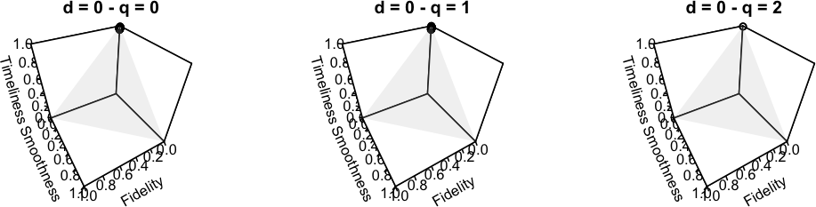
Notes : La smoothness est calculée avec le paramètre \(d=3\) (\(S_g(\boldsymbol \theta) = \sum_{j}(\nabla^{3}\theta_{j})^{2}\)), comme pour le filtre symétrique d’Henderson.
Les poids sont calculés à partir d’un quadrillage de 200 points de l’intervalle \([0,1]\) et en ne gardant que ceux tels que leur somme fasse 1.
Lorsque tous les filtres FST sont équivalents à une approche polynomiale, aucun graphique n’est tracé. Pour un filtre symétrique de 13 termes, la méthode FST est donc équivalente à une approche polynomiale sauf lorsqu’on ne contraint que la préservation des constante (\(d=0\)), pour les filtres nécessitant au plus deux observations futures (\(q=0,1\) ou 2) et seulement lorsque le poids associé à la timeliness est proche de 1.
Plus récemment, Luati et Proietti (2011) se sont intéressés aux cas d’équivalences entre les moindres carrés pondérés et les moindres carrés généralisés pour déterminer des noyaux optimaux (au sens de Gauss-Markov). Ils montrent que le noyau d’Epanechnikov est le noyau optimal associé à la régression polynomiale locale où le résidu, \(\varepsilon_t\), est un processus moyenne mobile (MA) non inversible d’ordre 1 (i.e., \(\varepsilon_t=(1-B)\xi_t\), avec \(\xi_t\) un bruit blanc). Dans ce cas, la matrice \(\boldsymbol \Sigma\) de variance-covariance correspond à la matrice obtenue par le critère de smoothness avec le paramètre \(q=2\) (\(\sum_{j}(\nabla^{2}\theta_{j})^{2} = \boldsymbol \theta'\boldsymbol \Sigma\boldsymbol \theta\)) : il y a donc équivalence avec l’approche FST. De même, le noyau d’Henderson est le noyau optimal associé à la régression polynomiale locale où le résidu est un processus moyenne mobile (MA) non inversible d’ordre 2 (i.e., \(\varepsilon_t=(1-B)^2\xi_t\), avec \(\xi_t\) un bruit blanc).
2.8.1.2.3 RKHS et polynômes locaux
Comme montré dans la section précédente, la théorie des espaces de Hilbert à noyau reproduisant permet de reproduire les filtres symétriques par approximation polynomiale locale. Comme le montrent Luati et Proietti (2011), cette théorie permet donc également de reproduire les filtres directs asymétriques (DAF), qui sont équivalents à l’approximation polynomiale locale mais en utilisant une fenêtre d’estimation asymétrique. Cependant, ils ne peuvent pas être obtenus par la formalisation de Dagum et Bianconcini (2008) mais par une discrétisation différente de la formule de l’équation 2.11 : \[ K_{d+1}(t)=\frac{\det{\boldsymbol H_{d+1}[1,\boldsymbol x_t]}}{\det{\boldsymbol H_{d+1}}}f_0(t), \] où \(\boldsymbol H_{d+1}[1,\boldsymbol x_t]\) est la matrice obtenue en remplaçant la première ligne de \(\boldsymbol H_{d+1}\) par \(\boldsymbol x_t=\begin{pmatrix} 1 & t & t^2 & \dots & t^d\end{pmatrix}'\). Dans le cas discret, \(f_0(t)\) est remplacé par \(\kappa_j\) et en remplaçant les moments théoriques par les moments empiriques \(\boldsymbol H_{d+1}\) devient \(\boldsymbol X'_p\boldsymbol K_p\boldsymbol X_p\) et les coefficients du filtre asymétrique sont obtenus en utilisant la formule : \[ w_{a,j}=\frac{\det{\boldsymbol X'_p\boldsymbol K_p\boldsymbol X_p[1,\boldsymbol x_j]} }{ \det{\boldsymbol X'_p\boldsymbol K_p\boldsymbol X_p} }\kappa_j. \] En effet, la règle de Cramer permet de trouver une solution explicite à l’équation des moindres carrés \((\boldsymbol X'_p\boldsymbol K_p\boldsymbol X_p)\hat{\boldsymbol \beta}=\boldsymbol X'_p\boldsymbol K_p \boldsymbol y_p\) où \(\hat \beta_0=\hat m_t\) : \[ \hat \beta_0 = \frac{\det{\boldsymbol X'_p\boldsymbol K_p\boldsymbol X_p[1,\boldsymbol b]}}{\det{\boldsymbol X'_p\boldsymbol K_p\boldsymbol X_p}}f_0(t) \quad\text{où}\quad \boldsymbol b=\boldsymbol X'_p\boldsymbol K_p\boldsymbol y_p. \] Comme \(\boldsymbol b=\sum_{j=-h}^q\boldsymbol x_j\kappa_jy_{t+j}\) il vient : \[ \det{\boldsymbol X'_p\boldsymbol K_p\boldsymbol X_p[1,\boldsymbol b]} = \sum_{j=-h}^q\det{\boldsymbol X'_p\boldsymbol K_p\boldsymbol X_p[1,\boldsymbol x_j]}\kappa_jy_{t+j}. \] Et enfin : \[ \hat \beta_0 = \hat m_t= \sum_{j=-h}^q\frac{\det{\boldsymbol X'_p\boldsymbol K_p\boldsymbol X_p[1,\boldsymbol x_j]} }{ \det{\boldsymbol X'_p\boldsymbol K_p\boldsymbol X_p} }\kappa_j y_{t+j}. \]
2.8.1.3 Diagrammes synthétiques
Les figure 2.16, figure 2.17 résument les liens entre toutes les méthodes.
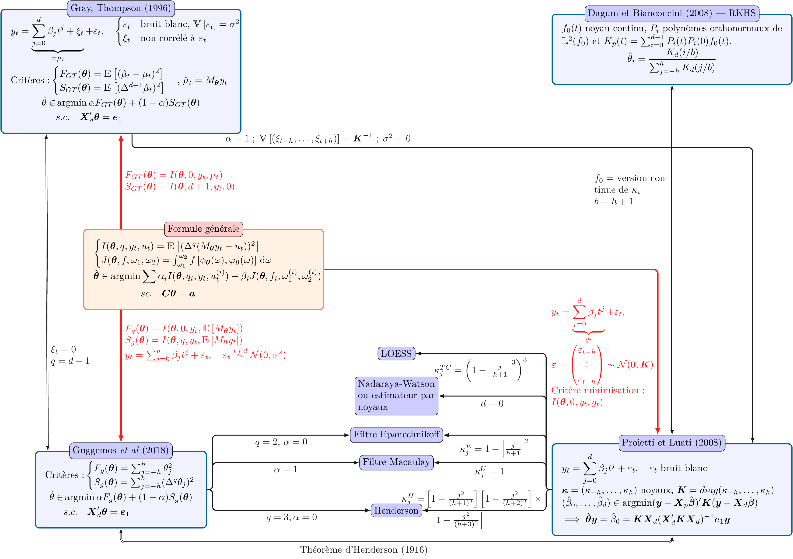
Note de lecture : \(\boldsymbol X = \boldsymbol X_d = \begin{pmatrix} \boldsymbol x_0 \quad\cdots \quad \boldsymbol x_d \end{pmatrix}\) avec \(\boldsymbol x_i=\begin{pmatrix} (-h)^i \quad \cdots \quad (h)^i\end{pmatrix}'\).
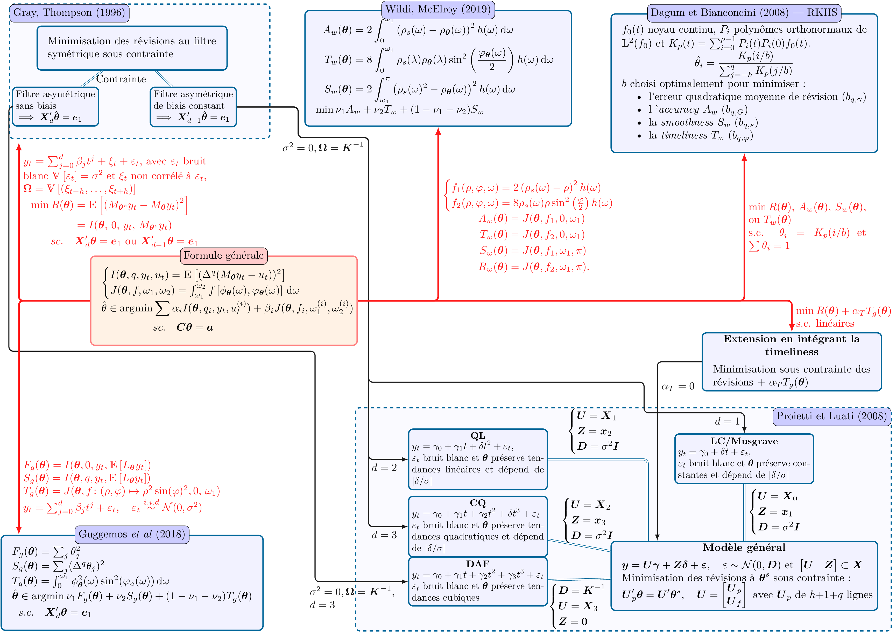
Note de lecture : \(\boldsymbol X_d = \begin{pmatrix} \boldsymbol x_0 \quad\cdots \quad \boldsymbol x_d \end{pmatrix}\) avec \(\boldsymbol x_i=\begin{pmatrix} (-h)^i \quad \cdots \quad (q)^i\end{pmatrix}'\) et \(\boldsymbol X=\boldsymbol X_d\) avec \(q=h\).
2.8.2 Coefficients, fonctions de gain et de déphasage
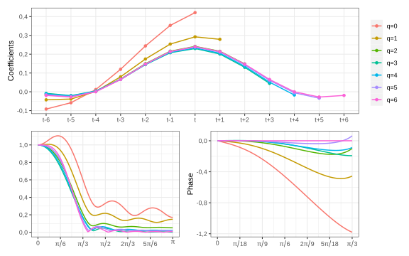
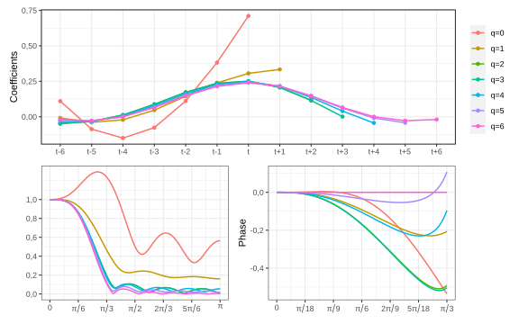
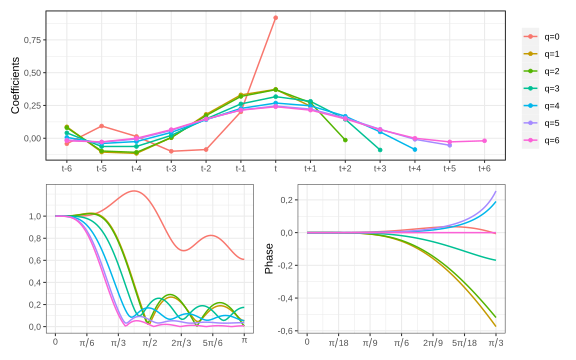
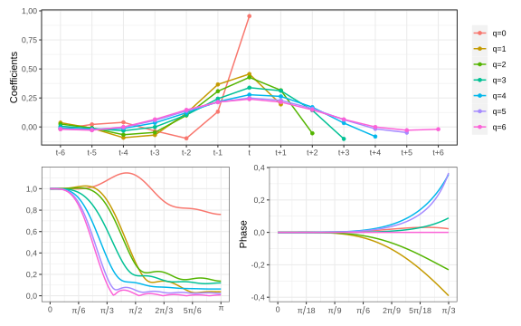
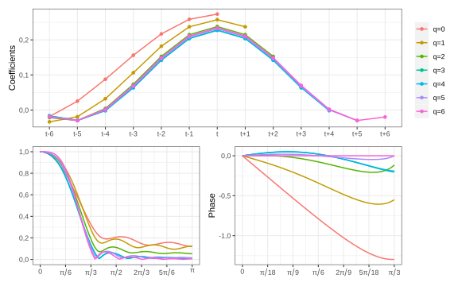
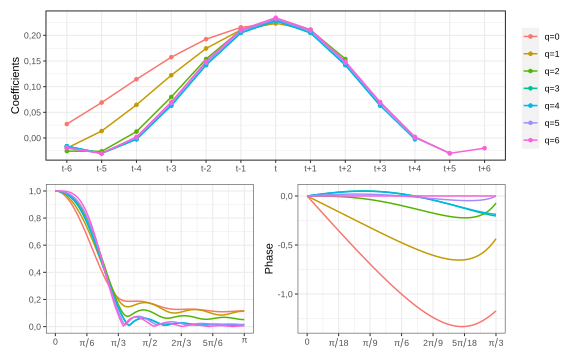
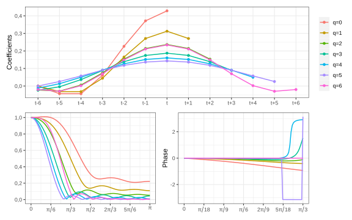
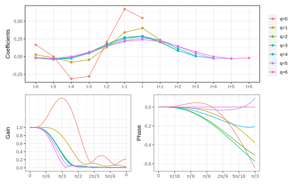
2.8.3 Exemple sous R
Cette annexe présente le code utilisé pour les exemples sur le climat des affaires dans l’industrie automobile.
# remotes::install_github("rjdverse/rjd3toolkit")
# remotes::install_github("rjdverse/rjd3filters")
# remotes::install_github("rjdverse/rjd3x11plus")
library(rjd3filters)
library(rjd3x11plus)
library(ggplot2)
library(patchwork)
library(zoo)
library(forecast)
library(insee)
y <- data.frame(insee::get_insee_idbank("001786505"))
y <- y[order(y[,"TIME_PERIOD"]), ]
first_date <- as.numeric(strsplit(y$TIME_PERIOD[1], "-")[[1]])
y <- ts(y$OBS_VALUE, start = first_date, frequency = 12)
y <- window(y, end = c(2023, 5))
y <- window(y, start = 2010)
last_dates <- c(tail(time(y), 7))
names(last_dates) <- as.character(zoo::as.yearmon(last_dates))
der_est <- lapply(last_dates, function(x) window(y, end = x))
# MM de longueur 13 adaptées :
select_trend_filter(y)
# Estimation finale
tc_f <- henderson(y, length = 13, musgrave = FALSE) # Estimation finale
plot(y)
lines(tc_f, col = "red")
forecast::autoplot(ts.union(y, tc_f))
## Méthode polynomiale
# Calcul des IC-ratios :
icr <- sapply(der_est, function(x) {
ic_ratio(x, henderson(x, length = 13, musgrave = FALSE))
})
lp_est <- lapply(c("LC", "QL", "CQ", "DAF"), function(method) {
res <- lapply(seq_along(icr), function(i) {
lp_coef <- lp_filter(horizon = 6,
kernel = "Henderson",
endpoints = method,
ic = icr[i])
rjd3filters::filter(der_est[[i]], lp_coef)
})
names(res) <- names(der_est)
res
})
lp_if <- lapply(c("LC", "QL", "CQ", "DAF"), function(method) {
res <- lapply(seq_along(icr), function(i) {
lp_coef <- lp_filter(horizon = 6,
kernel = "Henderson",
endpoints = method,
ic = icr[i])
implicit_forecast(der_est[[i]], lp_coef)
})
names(res) <- names(der_est)
res
})
names(lp_est) <- names(lp_if) <- c("LC", "QL", "CQ", "DAF")
# Estimation locale des IC-ratios
# On réplique l'estimation directe pour avoir
# des estimateurs de la pente et de la concavité
gen_MM <- function(p=6, q=p, d=2){
X_gen <- function(d = 1, p = 6, q = p){
sapply(0:d, function(exp) seq(-p, q)^exp)
}
k = rjd3filters::get_kernel("Henderson", h = p)
k = c(rev(k$coef[-1]), k$coef[seq(0,q)+1])
K = diag(k)
X = X_gen(d=d, p = p, q = q)
e1 = e2 = e3 = matrix(0, ncol = 1, nrow = d+1)
e1[1] = 1
e2[2] = 1
e3[3] = 1
# Estimateur de la constante
M1 = K %*% X %*% solve(t(X) %*% K %*% X, e1)
# estimateur de la pente
M2 = K %*% X %*% solve(t(X) %*% K %*% X, e2)
# estimateur de la concavité
M3 = K %*% X %*% solve(t(X) %*% K %*% X, e3)
mm <- list(const = M1, pente = M2, concav = M3)
lapply(mm, moving_average, lags = -p)
}
all_mm <- lapply(6:0, gen_MM, p = 6, d = 2)
est_pente <- finite_filters(all_mm[[1]]$pente,
lapply(all_mm[-1], `[[`, "pente"))
est_concav <- finite_filters(all_mm[[1]]$concav,
lapply(all_mm[-1], `[[`, "concav"))
henderson_f <- lp_filter(h=6)@sfilter
lp_filter2 <- function(icr, method = "LC", h = 6, kernel = "Henderson"){
all_coef = lapply(icr, function(ic){
lp_filter(horizon = h,
kernel = kernel,
endpoints = method,
ic = ic)
})
rfilters = lapply(1:h, function(i){
q <- h - i
all_coef[[i]][,sprintf("q=%i", q)]
})
finite_filters(henderson_f, rfilters = rfilters)
}
loc_lc_est <-
lapply(der_est, function(x) {
est_loc_pente <- c(tail(est_pente * x, 6))
sigma2 <- var_estimator(x, henderson_f)
icr = 2/(sqrt(pi) * (est_loc_pente / sqrt(sigma2)))
lp_coef = lp_filter2(ic = icr,
method = "LC", h = 6, kernel = "Henderson")
rjd3filters::filter(x, lp_coef)
})
loc_lc_if <-
lapply(der_est, function(x) {
est_loc_pente <- c(tail(est_pente * x, 6))
sigma2 <- var_estimator(x, henderson_f)
icr = 2/(sqrt(pi) * (est_loc_pente / sqrt(sigma2)))
lp_coef = lp_filter2(ic = icr,
method = "LC", h = 6, kernel = "Henderson")
implicit_forecast(x, lp_coef)
})
loc_ql_est <-
lapply(der_est, function(x) {
est_loc_concav <- c(tail(est_concav * x, 6))
sigma2 <- var_estimator(x, henderson_f)
icr = 2/(sqrt(pi) * (est_loc_concav / sqrt(sigma2)))
lp_coef = lp_filter2(ic = icr,
method = "QL", h = 6, kernel = "Henderson")
rjd3filters::filter(x, lp_coef)
})
loc_ql_if <-
lapply(der_est, function(x) {
est_loc_concav <- c(tail(est_concav * x, 6))
sigma2 <- var_estimator(x, henderson_f)
icr = 2/(sqrt(pi) * (est_loc_concav / sqrt(sigma2)))
lp_coef = lp_filter2(ic = icr,
method = "QL", h = 6, kernel = "Henderson")
implicit_forecast(x, lp_coef)
})
# Pour la méthode RKHS, pour le filtre b_q,phi on utilise
# le paramètre bw de l'article Dagum et Bianconcini (2015)
bw_phase <-c(`q=6` = 7, `q=5` = 6.95, `q=4` = 6.84,
`q=3` = 6.85, `q=2` = 7.34,
`q=1` = 9.24, `q=0` = 11.78)
rkhs_filter <- list(
"$b_{q,\\Gamma}$" = rkhs_filter(
horizon = 6, degree = 3,
asymmetricCriterion = "FrequencyResponse",
kernel = "Biweight", passband = pi
),
"$b_{q,G}$" = rkhs_filter(
horizon = 6, degree = 3,
asymmetricCriterion = "Accuracy",
kernel = "Biweight", passband = pi
),
"$b_{q,\\phi}$" = finite_filters(
do.call(cbind, lapply(seq_along(bw_phase), function(i){
rkhs_filter(horizon = 6, degree = 3,
kernel = "Biweight",
optimalbw = FALSE,
bandwidth = bw_phase[i])[,names(bw_phase)[i]]
}))
)
)
rkhs_est <- lapply(rkhs_filter, function(method) {
lapply(der_est, function(x) {
x * method
})
})
rkhs_if <- lapply(rkhs_filter, function(method) {
lapply(der_est, function(x) {
implicit_forecast(x, method)
})
})
fst_f <- finite_filters(
sfilter = fst_filter(lags = 6, leads = 6, pdegree=2,
smoothness.weight=0.05, smoothness.degree=3,
timeliness.weight=0.95,
timeliness.passband=2*pi/12,
timeliness.antiphase=TRUE),
rfilters = lapply(5:0, fst_filter, lags = 6, pdegree=2,
smoothness.weight=0.05, smoothness.degree=3,
timeliness.weight=0.95,
timeliness.passband=2*pi/12,
timeliness.antiphase=TRUE))
fst_est <- lapply(der_est, function(x) {
x * fst_f
})
fst_if <- lapply(der_est, function(x) {
implicit_forecast(x, fst_f)
})
## Graphiques
# Pour tracer toutes les estimations
plot_est <- function(data, nperiod = 6) {
joint_data <- do.call(ts.union, data)
joint_data <-
window(joint_data,
start = last_dates[1] - nperiod * deltat(joint_data))
data_legend <-
data.frame(x = last_dates,
y = sapply(data, tail, 1),
label = colnames(joint_data))
forecast::autoplot(joint_data) + theme_bw() +
scale_x_continuous(labels = zoo::as.yearmon) +
geom_text(aes(x = x, y = y, label = label, colour = label),
data = data_legend,
check_overlap = TRUE, hjust = 0, nudge_x = 0.01,
size = 2, inherit.aes = FALSE) +
theme(legend.position = "none") +
labs(x = NULL, y = NULL)
}
plot_prevs <- function (data, nperiod = 6) {
joint_data <- do.call(ts.union, lapply(data, function(x) {
first_date <- time(x)[1] - deltat(x)
# On rajoute la dernière date observée par lisibilité
ts(c(window(y, start = first_date, end = first_date), x),
start = first_date, frequency = frequency(x))
}))
data_legend <-
data.frame(x = sapply(data, function(x) tail(time(x), 1)),
y = sapply(data, tail, 1),
label = colnames(joint_data))
forecast::autoplot(joint_data, linetype = "dashed") +
forecast::autolayer(
window(y, start = last_dates[1] - nperiod * deltat(y)),
colour = FALSE
) +
theme_bw() +
scale_x_continuous(labels = zoo::as.yearmon) +
geom_text(aes(x = x, y = y, label = label, colour = label),
data = data_legend,
check_overlap = TRUE, hjust = 0, nudge_x = 0.01,
size = 2, inherit.aes = FALSE) +
theme(legend.position = "none") +
labs(x = NULL, y = NULL)
}
all_est <- c(lp_est, list("LC param. locale" = loc_lc_est),
list("QL param. locale" = loc_ql_est),
rkhs_est,
list(FST = fst_est))
all_if <- c(lp_if, list("LC param. locale" = loc_lc_if),
list("QL param. locale" = loc_ql_if),
rkhs_if,
list(FST = fst_if))
y_lim <- c(102, 105)
all_plots_est <- lapply(
names(all_est),
function(x) plot_est(all_est[[x]]) +
ggtitle(latex2exp::TeX(sprintf("Tendance-cycle avec %s", x))) +
coord_cartesian(ylim = y_lim)
)
all_plots_prev <- lapply(
names(all_if),
function(x) plot_prevs(all_if[[x]]) +
ggtitle(latex2exp::TeX(sprintf("Prévisions implicites avec %s", x)))
)
wrap_plots(all_plots_est[1:4], ncol = 2)
wrap_plots(all_plots_prev[1:4], ncol = 2)
wrap_plots(all_plots_est[c(1,5,2,6)], ncol = 2)
wrap_plots(all_plots_prev[c(1,5,2,6)], ncol = 2)
wrap_plots(c(all_plots_est[7:9],
all_plots_prev[7:9]), nrow = 2)
wrap_plots(c(all_plots_est[10], all_plots_prev[10]), nrow = 1)2.8.4 Noyaux et régression locale
2.8.4.1 Les différents noyaux
Dans les problèmes d’extraction du signal, les observations sont généralement pondérées par rapport à leur distance à la date \(t\) : pour estimer la tendance-cycle à la date \(t\), on accorde généralement plus d’importance aux observations qui sont proches de \(t\).
Dans le cas continu, un noyau \(\kappa\) est une fonction positive, paire et intégrable telle que \(\int_{-\infty}^{+\infty}\kappa(u) \ud u=1\) et \(\kappa(u)=\kappa(-u)\). Dans le cas discret, un noyau est un ensemble de poids \(\kappa_j\), \(j=0,\pm1,\dots,\pm h\) avec \(\kappa_j \geq0\) et \(\kappa_j=\kappa_{-j}\).
Une classe importante de noyaux est celle des noyaux Beta. Dans le cas discret, à un facteur multiplicatif près (de sorte que \(\sum_{j=-h}^h\kappa_j=1\)) : \[
\kappa_j = \left(
1-
\left\lvert
\frac j {h+1}
\right\lvert^r
\right)^s,\quad\text{avec }r>0,s\geq 0.
\] Cette classe englobe la majorité des noyaux présentés dans cette étude, à l’exception des noyaux d’Henderson, trapézoïdal et gaussien. Les principaux noyaux (qui sont également implémentés dans rjd3filters) sont :
\(r=1,s=0\) noyau uniforme : \[\kappa_j^U=1\]
\(r=s=1\) noyau triangulaire : \[\kappa_j^T=\left( 1- \left\lvert \frac j {h+1} \right\lvert \right)\]
\(r=2,s=1\) noyau d’Epanechnikov (ou parabolique) : \[\kappa_j^E=\left( 1- \left\lvert \frac j {h+1} \right\lvert^2 \right)\]
\(r=s=2\) noyau quadratique (biweight) : \[\kappa_j^{BW}=\left( 1- \left\lvert \frac j {h+1} \right\lvert^2 \right)^2\]
\(r = 2, s = 3\) noyau cubique (triweight) : \[\kappa_j^{TW}=\left( 1- \left\lvert \frac j {h+1} \right\lvert^2 \right)^3\]
\(r = s = 3\) noyau tricube : \[\kappa_j^{TC}=\left( 1- \left\lvert \frac j {h+1} \right\lvert^3 \right)^3\]
noyau d’Henderson (voir Section 2.8.4.2 pour plus de détails) : \[ \kappa_{j}=\left[1-\frac{j^2}{(h+1)^2}\right] \left[1-\frac{j^2}{(h+2)^2}\right] \left[1-\frac{j^2}{(h+3)^2}\right] \]
noyau trapézoïdal : \[ \kappa_j^{TP}= \begin{cases} \frac{1}{3(2h-1)} & \text{ si }j=\pm h \\ \frac{2}{3(2h-1)} & \text{ si }j=\pm (h-1)\\ \frac{1}{2h-1}& \text{ sinon} \end{cases} \]
noyau gaussien36 : \[ \kappa_j^G=\exp\left( -\frac{ j^2 }{ 2\sigma^2h^2 }\right) \]
Les noyaux d’Henderson, trapézoïdal et gaussien sont particuliers :
Les fonctions noyau d’Henderson et trapézoïdal changent avec la fenêtre (les autres dépendent uniquement du rapport \(j/(h+1)\)).
Pour les noyaux trapézoïdal et gaussien, d’autres définitions pourraient être utilisées et ils sont donc définis arbitrairement. Pour le noyau trapézoïdal on pourrait par exemple prendre une pente utilisant moins de points (par exemple \(\begin{cases}\frac{1}{4h} &\text{ si }j=\pm h \\ \frac{2}{4h}& \text{ sinon}\end{cases}\)) ou donner un poids plus faible aux observations extrêmes (par exemple \(\begin{cases}\frac{1}{6h-1} &\text{ si }j=\pm h \\ \frac{3}{6h-1}& \text{ sinon}\end{cases}\)) ; pour le noyau gaussien on pourrait prendre une variance plus ou moins élevée.
Le noyau trapézoïdal implémenté dansrjd3filterspermet de calculer les moyennes mobiles utilisées dans l’algorithme X-13ARIMA pour l’extraction des composantes saisonnières. Il n’est pas adapté dans le cas de l’extraction de la tendance-cycle.
2.8.4.2 Quelques filtres symétriques particuliers
Lorsque l’on effectue une régression locale en modélisant une constante locale (\(d=0\)), on obtient l’estimateur de Nadaraya-Watson (ou l’estimateur par noyaux).
Avec le noyau uniforme on obtient le filtre de Macaulay et al. (1931). Lorsque \(d=0\) ou \(d=1\), on retrouve la moyenne arithmétique : \(w_j=w=\frac{1}{2h+1}\).
Le noyau d’Epanechnikov est souvent recommandé comme le noyau optimal car il minimise l’erreur quadratique moyenne de l’estimation par polynômes locaux.
Le Loess, locally estimated scatterplot smoothing (notamment utilisé dans la méthode de désaisonnalisation STL), est une régression locale pondérée qui utilise le noyau tricube.
Le filtre d’Henderson est un cas particulier de l’approximation locale cubique (\(d=3\)), couramment utilisée pour l’extraction de la tendance-cycle (c’est par exemple le filtre utilisé dans le logiciel de désaisonnalisation X-13ARIMA). Pour une fenêtre fixée, Henderson a trouvé le noyau qui donnait l’estimation la plus lisse de la tendance. Il montre l’équivalence entre les trois problèmes suivants :
- minimiser la variance de la différence d’ordre trois de la série lissée par l’application d’une moyenne mobile ;
- minimiser la somme du carré de la différence d’ordre trois des coefficients du filtre, c’est le critère de lissage (smoothness) : \(S=\sum_j(\nabla^{3}\theta_{j})^{2}\) ;
- estimer une tendance localement cubique par les moindres carrés pondérés, où les poids sont choisis de sorte à minimiser la smoothness (cela conduit au noyau présenté dans la Section 2.8.4.1).
Une moyenne mobile est une méthode statistique qui consiste à appliquer une moyenne pondérée glissante à une série temporelle : à chaque date \(t\) on calcule une moyenne pondérée de \(p\) points passés et \(q\) points futurs où \(p,q\geq0\) dépend de la moyenne mobile.↩︎
La fonction de transfert peut être définie de manière équivalente par \(\Gamma_{\boldsymbol\theta}(\omega)=\sum_{k=-p}^{+f} \theta_k e^{i \omega k}\) ou \(\Gamma_{\boldsymbol\theta}(\omega)=\sum_{k=-p}^{+f} \theta_k e^{2\pi i \omega k}\).↩︎
Cette fonction est parfois définie comme \(\phi_{\boldsymbol\theta}(\omega)=\frac{\varphi_{\boldsymbol\theta}(\omega)}{\omega}\) pour mesurer le déphasage en termes de période.↩︎
Lorsque \(\varphi_{\boldsymbol\theta}(\omega)/\omega<0\) le déphasage est négatif : le point de retournement est détecté avec retard.↩︎
Même si des fréquences différentes sont parfois retenues (par exemple \([0, 2\pi/36]\) pour ne considérer que les cycles d’au moins 36 mois), cela n’a pas d’impact sur les différentes simulations.↩︎
« As the first \(m\) and last \(m\) terms of the series cannot be reached directly by the formula, the series should be graphically extended by m terms at both ends, first plotting the observations on paper as ordinates, and then extending the curve along what seems to be its probable course, and measuring the ordinates of the extended portions. It is not necessary that this extension should coincide with what would be the true course of the curve in those parts. The important point is that the m terms thus added, taken together with the \(m+1\) adjacent given terms, should follow a curve whose form is approximately algebraic and of a degree not higher than the third. »↩︎
https://bdm.insee.fr/series/sdmx/data/SERIES_BDM/001786505.↩︎
La série est donc désaisonnalisée.↩︎
\(\boldsymbol \theta\) est symétrique du fait de la symétrie des noyaux \(\kappa_j\).↩︎
Voir par exemple W. S. Cleveland et Loader (1996) ou Loader (1999). Les seules contraintes souhaitées sur le noyau est qu’il accorde un poids plus important à l’estimation centrale (\(\kappa_0\)) et qu’il décroit vers 0 lorsqu’on s’éloigne de l’estimation centrale. Le noyau uniforme est donc à éviter.↩︎
Dans la majorité des cas un filtre de 13 termes est utilisé. Si le ratio est grand alors un filtre de 23 termes est utilisé (pour supprimer davantage de bruit) et si le ratio est petit un filtre de 9 termes est utilisé.↩︎
En effet, pour détecter un point de retournement à la date \(t\), il est nécessaire de connaître au moins 2 points après cette date afin de s’assurer qu’il y a bien un retournement de tendance.↩︎
Afin qu’ils soient tous visibles, l’axe des ordonnées n’est pas le même entre les différents graphiques.↩︎
C’est ce qui a été proposé par Jean Palate, puis codé en Java et intégré dans
rjd3filters.↩︎C’est-à-dire \(\int_\R K_{d+1}(s)\ud s = 1\) et \(\int_\R K_{d+1}(s) s^i\ud s = 1\) pour \(i\in \llb 1, d\rrb\).↩︎
Cela vient en fait du procédé d’orthonormalisation de Gram-Schmidt.↩︎
Dans leur article, les auteurs utilisent une formule différente pour la fonction de réponse (\(\Gamma_{\boldsymbol\theta}(\omega)=\sum_{k=-p}^{+f} \theta_k e^{2\pi i \omega k}\)), ce qui conduit à des bornes d’intégrales légèrement différentes, sans effet sur le résultat.↩︎
Si l’on étudie des séries mensuelles et que l’on considère que la tendance-cycles correspondent aux cycles de 12 mois ou plus, on peut donc utiliser \(\omega_1=2\pi/12\) (voir Section 2.2.1).↩︎
Méthode non utilisée dans Dagum et Bianconcini (2015) mais implémentée dans
rjd3filters.↩︎Grun-Rehomme, Guggemos, et Ladiray (2018) suggèrent 6 conditions de régularité à la fonction de pénalité afin qu’elle soit adaptée au problème de déphasage. Dans leur article, la fonction \(f\) ne dépend que du gain et du déphasage de \(\theta\) et les 6 conditions sont : \(f \geq 0\), \(f\left(\rho,0\right)=0\), \(f\left(0,\varphi\right)=0\), \(f\left(\rho,\varphi\right)=f\left(\rho,-\varphi\right)\), \(\frac{\partial f}{\partial \rho} \geq 0\) et \(\varphi \cdot \frac{\partial f}{\partial \varphi} \geq 0\).↩︎
Par rapport à l’article originel, les notations ont été modifiées afin de garder une cohérence entre les différentes sections.↩︎
Par opposition aux approches indirectes par exemple utilisées dans X-13-ARIMA où le signal cible est approché en faisant une prévision sur la série initiale.↩︎
Les formules qui suivent peuvent également se généraliser aux processus intégrés non-stationnaires, par exemple en imposant une cointégration entre \(TC_t\) et \(\widehat{TC}_{t}\) et en utilisant le pseudo-spectre, voir Wildi et McElroy (2013).↩︎
Dans l’article originel, l’intervalle pass-band dépend de la fonction de gain du filtre symétrique (pass-band\(=\{\omega |\rho_s(\omega)\geq 0,5\}\)) : cela correspond donc à l’intervalle contenant les fréquences conservées sans trop de distorsion par le filtre symétrique. Dans le cas du filtre symétrique d’Henderson de 13 termes, cela correspond à l’intervalle \([0, 2\pi/8]\), c’est-à-dire aux cycles de plus de 8 mois.↩︎
En pratique ce n’est pas toujours le cas comme montré dans la Section 2.3.1.2.↩︎
Le modèle ARIMA est déterminé automatiquement en n’utilisant pas de retard saisonnier (les séries étant désaisonnalisées) et en n’utilisant aucune variable extérieure (comme des régresseurs externes pour la correction des points atypiques).↩︎
Comme il n’est pas possible d’avoir un poids associé à la timeliness (\(\gamma\)) égal à 1 (sinon la fonction objectif n’est pas strictement convexe), on construit également un filtre avec un poids très proche de 1 (\(1-1/1000\)).↩︎
Par simplification, pour l’approche polynomiale locale, nous ne présenterons ici que les résultats avec le noyau de Henderson. Il est en effet difficile de comparer proprement les résultats entre les différents noyaux car le filtre symétrique n’est pas le même. Le filtre symétrique étant celui utilisé pour la détection finale des points de retournement, cela a pour conséquence que des points de retournement différents peuvent être détectés. Par exemple, pour le filtre LC, sur les trois séries ayant une variabilité moyenne, seul 1 point de retournement est correctement détecté par l’ensemble des noyaux. Toutefois, une première analyse des résultats montrent que les différents noyaux ont des performances proches en termes de déphasage et de révisions, sauf le noyau uniforme qui produit de moins bons résultats.↩︎
Cet écart provient du fait que la fenêtre optimale retenue \(b_{q,\varphi}\) est croissante jusqu’à \(b_{5,\varphi}=10,39\) et s’écarte donc de la valeur utilisée du filtre symétrique (\(h+1=7\)).↩︎
Les séries étudiées correspondent à la base publiée en novembre 2022.↩︎
La variabilité est déterminée en étudiant les séries jusqu’en janvier 2020.↩︎
Cela consiste à choisir la fenêtre par la méthode des plus proches voisins : quel que soit le nombre de points dans le futur connus, on utilisera toujours 13 observations pour estimer la tendance-cycle. Pour l’estimation en temps-réel, la moyenne mobile utilisera donc l’observation courante et 12 points passés. Ainsi, pour les estimations intermédiaires, on utilisera plus de points dans le passé que pour le filtre symétrique.↩︎
La série de référence est en général un estimateur robuste de la tendance-cycle de \(Y_t\) que l’on cherche à approcher par application de la moyenne mobile \(M_{\boldsymbol\theta}\) sur les observations \(y_t\). Cet estimateur peut également dépendre de \(M_{\boldsymbol\theta}.\)↩︎
Dans
rjd3filters\(\sigma^2\) est fixé arbitrairement à \(\sigma^2=0,25\).↩︎